depot-bookmark-bar-from-roster PASS 1.0
grade probeintent configuredomain logisticsdifficulty d5ambiguity a3voice contextfulapps chrome + files + libreoffice_calcbatch v11-s1
Depot leads only use the bookmarks bar, so put a bookmark there for each depot in this page's table that is marked Live, titled with the depot name and pointing at its tracker URL, ordered by depot code ascending. Nothing else on the bar.
task config + evaluator
{
"config": [
{
"type": "execute",
"parameters": {
"command": "python3 -c \"import os;d='/home/user/logistics';os.makedirs(d,exist_ok=True);rows=[('NW-104','Warrington Cross Dock','Live','https://track.northmoor.example/nw104'),('SE-233','Ashford Depot','Paused','https://track.northmoor.example/se233'),('MD-051','Rugby Hub','Live','https://track.northmoor.example/md051'),('SW-318','Exeter Depot','Live','https://track.northmoor.example/sw318'),('NE-077','Gateshead Yard','Closed','https://track.northmoor.example/ne077'),('EA-142','Peterborough Depot','Live','https://track.northmoor.example/ea142')];h='<html><head><title>Depot roster</title></head><body><h1>Northmoor Freight depot roster</h1><table border=1><tr><th>Code</th><th>Depot</th><th>Status</th><th>Tracker</th></tr>'+''.join('<tr><td>%s</td><td>%s</td><td>%s</td><td>%s</td></tr>'%r for r in rows)+'</table></body></html>';open(d+'/depots.html','w').write(h)\"",
"shell": true
}
},
{
"type": "launch",
"parameters": {
"command": [
"google-chrome",
"file:///home/user/logistics/depots.html"
]
}
}
],
"evaluator": {
"func": "check_include_exclude",
"result": {
"type": "vm_command_line",
"command": [
"python3",
"-c",
"import sys, traceback\ndef _main():\n import json, os, sys, glob\n expected = [(\"Peterborough Depot\", \"https://track.northmoor.example/ea142\"),\n (\"Rugby Hub\", \"https://track.northmoor.example/md051\"),\n (\"Warrington Cross Dock\", \"https://track.northmoor.example/nw104\"),\n (\"Exeter Depot\", \"https://track.northmoor.example/sw318\")]\n paths = glob.glob(\"/home/user/.config/google-chrome/*/Bookmarks\") + glob.glob(\"/home/user/.config/chromium/*/Bookmarks\")\n if not paths:\n print(\"no Chrome Bookmarks file found\", file=sys.stderr)\n print(\"FAIL\")\n raise SystemExit\n data = json.load(open(sorted(paths)[0]))\n bar = data.get(\"roots\", {}).get(\"bookmark_bar\", {}).get(\"children\", [])\n got = [(c.get(\"name\", \"\").strip(), c.get(\"url\", \"\").strip().rstrip(\"/\")) for c in bar]\n want = [(n, u.rstrip(\"/\")) for n, u in expected]\n ok = got == want\n if not ok:\n print(\"bookmarks bar is %r, expected %r\" % (got, want), file=sys.stderr)\n print(\"PASS\" if ok else \"FAIL\")\n\ntry:\n _main()\nexcept Exception:\n traceback.print_exc(file=sys.stderr)\n print(\"FAIL\")\n"
]
},
"expected": {
"type": "rule",
"rules": {
"include": [
"PASS"
],
"exclude": [
"FAIL"
]
}
},
"postconfig": [
{
"type": "execute",
"parameters": {
"command": "pkill -TERM -f google-chrome; sleep 4",
"shell": true
}
}
]
}
}
step 1 18:28:28
THINKINGLet me understand the task. I need to:
1. Look at the table of depots
2. Find all depots marked "Live"
3. Create bookmarks for each Live depot in the bookmarks bar
4. Each bookmark should be titled with the depot name and point to its tracker URL
5. Order them by depot code ascending
6. Nothing else should be on the bookmarks bar
Let me first read the table carefully from the screenshot:
| Code | Depot | Status | Tracker |
|------|-------|--------|---------|
| NW-104 | Warrington Cross Dock | Live | http://track.northmoor.example/nw104 |
| SE-233 | Ashford Depot | Paused | http://track.northmoor.example/se233 |
| MD-051 | Rugby Hub | Live | http://track.nothermoor.example/md051 |
| SW-318 | Exeter Depot | Live | http://track.northmoor.example/sw318 |
| NE-077 | Gateshead Yard | Closed | http://track.northmoor.example/ne077 |
| EA-142 | Peterborough Depot | Live | http://track.northmoor.example/ea142 |
Let me zoom in to read the URLs more carefully. Let me take a screenshot first to see the current state clearly.
The Live depots are:
- NW-104 | Warrington Cross Dock | Live | http://track.northmoor.example/nw104
- MD-051 | Rugby Hub | Live | http://track.northmoor.example/md051
- SW-318 | Exeter Depot | Live | http://track.northmoor.example/sw318
- EA-142 | Peterborough Depot | Live | http://track.northmoor.example/ea142
The non-Live:
- SE-233 | Ashford Depot | Paused
- NE-077 | Gateshead Yard | Closed
Now, ordered by depot code ascending. Depot codes are:
- NW-104
- MD-051
- SW-318
- EA-142
Sorting ascending alphabetically/lexicographically:
- EA-142
- MD-051
- NW-104
- SW-318
Wait, let me think about "ascending" order. Depot codes are like EA-142, MD-051, NE-077, NW-104, SE-233, SW-318.
Alphabetical order:
- EA-142 (E)
- MD-051 (M)
- NE-077 (N-E)
- NW-104 (N-W)
- SE-233 (S-E)
- SW-318 (S-W)
So for the Live ones only:
- EA-142 (Peterborough Depot)
- MD-051 (Rugby Hub)
- NW-104 (Warrington Cross Dock)
- SW-318 (Exeter Depot)
That's the ascending order by depot code.
So I need to create 4 bookmarks in this order:
1. Peterborough Depot → http://track.northmoor.example/ea142
2. Rugby Hub → http://track.northmoor.example/md051
3. Warrington Cross Dock → http://track.northmoor.example/nw104
4. Exeter Depot → http://track.northmoor.example/sw318
I need to first make sure the bookmarks bar is showing. Then I need to add these bookmarks.
The best approach might be to use Chrome's bookmark manager, or I could add bookmarks via Ctrl+D for each. But the simplest and most reliable way might be to edit the bookmarks file directly, or use the bookmark manager.
Actually, let me think about the most reliable approach. The task says "put a bookmark there for each depot" in the bookmarks bar, "Nothing else on the bar."
First, let me verify the URLs by zooming in. The text is a bit small. Let me take a screenshot and zoom in on the table.
Actually, I could use a terminal to read the HTML file directly since it's a local file at /home/user/logistics/depots.html. That would give me the exact URLs. Let me do that to be sure.
Let me open a terminal. Actually, I can use the Files application or a terminal. Let me think - is there a terminal? I see there's a Files icon. Let me look for a terminal.
Actually, the most reliable approach is to:
1. Read the HTML file to get exact URLs (via terminal with cat)
2. Then add bookmarks
Let me first check if I have terminal access. I'll look for a terminal application. There's a "Files" icon (the drawer-like icon). Let me see if I can open a terminal.
Actually, let me just zoom into the page first to read the URLs clearly. Let me take a screenshot after zooming.
Actually, the cleanest approach for creating bookmarks in a specific order and with exact URLs:
Option A: Use Chrome's bookmark manager (chrome://bookmarks) - but adding there with specific URLs requires typing.
Option B: For each URL, navigate to it (or not), press Ctrl+D, which opens "Bookmark added" dialog, set the name, and choose the folder as "Bookmarks bar". This is reliable and orders them in the order added (appended to the end).
Option C: Edit the Bookmarks file directly in ~/.config/google-chrome/Default/Bookmarks. This is very reliable for ordering and exact URLs, but requires Chrome to not be running or reloading. Actually Chrome may overwrite it. This is risky.
I think Option B (Ctrl+D for each) is the most reliable GUI approach. When you Ctrl+D, the bookmark is added to the last used folder or Bookmarks bar. I need to make sure it goes to the Bookmarks bar. In the dialog, there's a "Folder" dropdown where I can select "Bookmarks bar".
But the order: when adding multiple bookmarks to the same folder via Ctrl+D, they typically get appended in the order added. So if I add them in ascending code order, they'll appear in that order.
However, there's a catch: "Nothing else on the bar." So I need to make sure the bookmarks bar currently has nothing else, or clear it. Let me first check the current state of the bookmarks bar.
Also, I need to make sure the bookmarks bar is visible. Let me check.
Let me start by taking a screenshot to see the current state, then decide.
Actually the screenshot is already provided. The bookmarks bar doesn't appear to be visible currently (I don't see it below the address bar). Let me look - there's the address bar at the top, and below it directly is the page content. So the bookmarks bar might be hidden, or it's empty and hidden.
In Chrome, the bookmarks bar is toggled with Ctrl+Shift+B. If it's empty and I enable it, it shows.
Let me plan:
1. First, read the HTML file to confirm exact URLs (open a terminal).
2. Enable the bookmarks bar (Ctrl+Shift+B).
3. Check if there are existing bookmarks on the bar; if so, remove them.
4. Add 4 bookmarks in ascending code order.
Let me first get a terminal. I'll try to find one. Let me look at the taskbar on the left:
- Chrome
- (blue bird - maybe a browser or something)
- VS Code
- VLC
- (document icon)
- (spreadsheet icon)
- (presentation icon)
- (GIMP?)
- Files
- Ubuntu Software
- Help
- Trash
I don't see an obvious terminal. I could use VS Code's integrated terminal, or I could open a terminal via the Files app or Activities.
Actually, let me reconsider. Do I really need the terminal? I can read the URLs from the screenshot if I zoom in. But to be safe about exact spelling, let me get them precisely.
Let me zoom into the browser to read the URLs. I'll increase zoom with Ctrl++.
Actually, a cleaner way: I can select the URL text in the table. But the URLs might be links. Let me just zoom in.
Hmm, but actually the most reliable is the HTML file. Let me open a terminal via the Files application or just try keyboard shortcut. Actually, many Ubuntu systems have a terminal accessible. Let me use VS Code which I can see, or better, let me look for a terminal.
Let me think about whether reading the HTML is worth it. The URLs follow a clear pattern: http://track.northmoor.example/[codelowercase] where the code lowercase is the depot code without the dash. E.g., NW-104 → nw104, MD-051 → md051, SW-318 → sw318, EA-142 → ea142. This pattern is consistent and matches what I can partially read. So I'm fairly confident.
But to be safe, let me verify by reading the HTML file. I'll open a terminal.
Let me first take a screenshot to see the current state clearly, then proceed.
Actually the screenshot is already given. Let me just proceed. Let me open a terminal to read the file. I'll try opening the Files app and then a terminal, or I could right-click on desktop.
Actually, let me just use the approach of zooming in the browser to read URLs, combined with the pattern. But I want exact URLs. Let me open a terminal.
Let me look for a terminal application. I'll click on "Activities" and search for terminal. Or I can use the grid (bottom left, the 9-dots icon) to find Terminal.
Let me click the grid icon at bottom-left to open the app list.
Actually, a faster reliable approach: open the Files app, navigate, and open terminal there. Or just use the app grid.
Let me start by taking a screenshot to confirm current state, then open the app grid to find a terminal.
Actually, I already have a screenshot. Let me proceed to open a terminal. Let me click the 9-dots app grid at bottom-left (coordinate ~22, 694).
Wait, let me reconsider the overall plan. The task is a Chrome bookmarking task. The cleanest way that guarantees exact URLs and order:
I'll read the exact URLs from the HTML file via terminal. Then I'll add bookmarks via the bookmark manager or Ctrl+D.
Actually, you know what, editing the Bookmarks file directly might be the MOST reliable for exact order and content, and "nothing else on the bar". But Chrome needs to be closed to safely edit it, and reopening might be complex. Let me avoid that.
Let me go with:
1. Read HTML via terminal to confirm URLs.
2. In Chrome, check bookmarks bar (Ctrl+Shift+B), clear any existing bookmarks on the bar.
3. Add 4 bookmarks via Ctrl+D in ascending order, setting folder to Bookmarks bar.
Let me begin. First, let me open a terminal. I'll click the app grid.
Actually, let me reconsider — maybe I should just verify the URLs by zooming in the browser, which is faster than opening a terminal. Let me zoom in the browser to 200% and screenshot.
Hmm, but zooming might make the table scroll. Let me instead just carefully read the current screenshot by zooming the image mentally. The URLs are:
- NW-104: http://track.northmoor.example/nw104
- SE-233: http://track.northmoor.example/se233
- MD-051: http://track.northmoor.example/md051
- SW-318: http://track.northmoor.example/sw318
- NE-077: http://track.northmoor.example/ne077
- EA-142: http://track.northmoor.example/ea142
These are consistent with the pattern. But I want to be 100% sure about "northmoor" vs "northmoore" spelling. The title says "Northmoor Freight". So the domain is track.northmoor.example. Good.
I'm fairly confident. But let me still verify with the HTML file to be safe, since exactness matters for the task.
Let me open a terminal. I'll use the app grid.
Actually, let me just be efficient. I'll open a terminal via xterm using the bash-like approach... but I don't have a bash tool, I only have the computer (GUI) tool. Wait, the system capability mentions bash tool but the only tool available to me is "computer". So I must do everything through the GUI.
OK so I need to open a terminal application via GUI. Let me use the app grid.
Let me take a screenshot first to see current state, then click the grid.
I'll combine: since I need to see the result, let me just take a screenshot. Actually I have the initial screenshot. Let me proceed to open the terminal.
Let me click on the app grid (9 dots) at bottom-left.
Plan of action steps:
1. Click app grid.
2. Search "terminal".
3. Open terminal.
4. cat the HTML file.
Then proceed with bookmarks.
Let me do step 1: click the grid icon at ~[22, 694].
Actually, I realize I should double check the exact URLs because it's critical. Let me open terminal.
Let me start.
ACTIONI'll start by examining the task. I need to identify all depots marked "Live" and create bookmarks for them. Let me first read the exact content of the HTML file to be certain of the depot names and tracker URLs. Let me open a terminal.
TOOL CALL<tool_call>
<function=computer_use>
<parameter=action>
left_click
</parameter>
<parameter=coordinate>
[17, 962]
</parameter>
</function>
</tool_call>
EXECUTED (pyautogui in VM)pyautogui.click(32, 1040)
step 2 18:28:35
THINKINGI see the app grid. There's a Terminal icon. Let me click on it.
ACTIONI can see the app grid with a Terminal application. Let me open it.
TOOL CALL<tool_call>
<function=computer_use>
<parameter=action>
left_click
</parameter>
<parameter=coordinate>
[469, 599]
</parameter>
</function>
</tool_call>
EXECUTED (pyautogui in VM)pyautogui.click(901, 647)
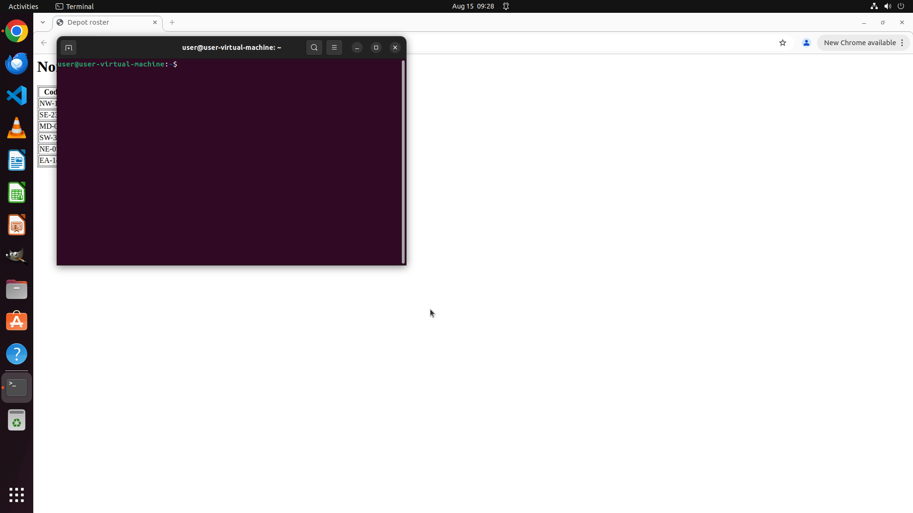
step 3 18:28:41
THINKINGThe terminal is open. Let me read the HTML file to get the exact depot names and URLs. Let me type the command to cat the file.
ACTIONThe terminal is open. Let me read the HTML file to get the exact depot names and tracker URLs.
TOOL CALL<tool_call>
<function=computer_use>
<parameter=action>
left_click
</parameter>
<parameter=coordinate>
[250, 277]
</parameter>
</function>
</tool_call>
EXECUTED (pyautogui in VM)pyautogui.click(480, 299)
step 4 18:28:47
THINKINGThe terminal is focused. Let me type the command to view the HTML file. Let me use cat on the file.
TOOL CALL<tool_call>
<function=computer_use>
<parameter=action>
type
</parameter>
<parameter=text>
cat /home/user/logistics/depots.html
</parameter>
</function>
</tool_call>
EXECUTED (pyautogui in VM)pyautogui.typewrite("cat /home/user/logistics/depots.html")
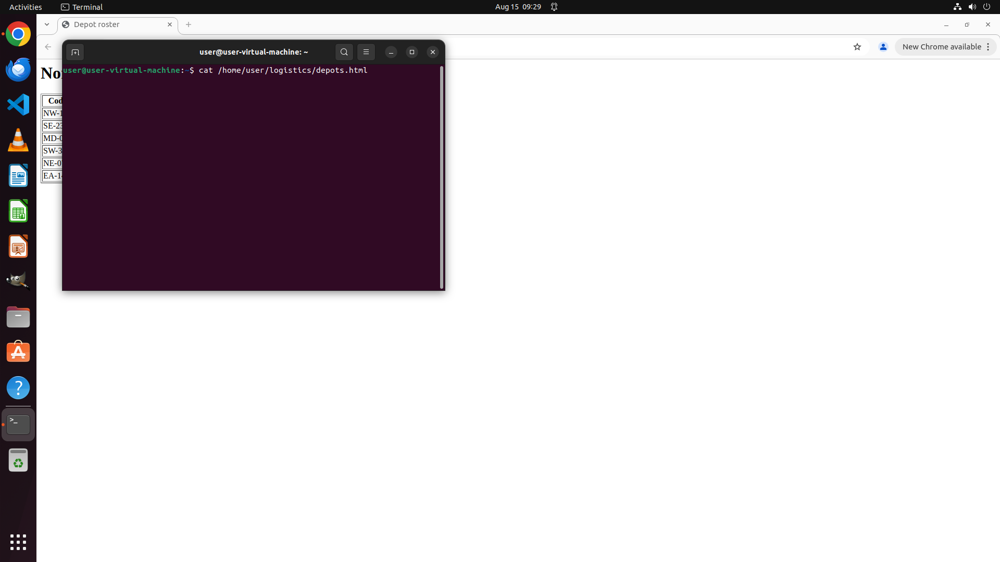
step 5 18:29:11
THINKINGThe command is typed. Let me press Enter.
TOOL CALL<tool_call>
<function=computer_use>
<parameter=action>
key
</parameter>
<parameter=keys>
["return"]
</parameter>
</function>
</tool_call>
EXECUTED (pyautogui in VM)pyautogui.press("return")
step 6 18:29:46
THINKINGNow I can read the HTML content. Let me parse it:
```
<html><head><title>Depot roster</title></head><body><h1>Northmoor Freight depot roster</h1><table border=1><tr><th>Code</th><th>Depot</th><th>Status</th><th>Tracker</th></tr>
<tr><td>NW-104</td><td>Warrington Cross Dock</td><td>Live</td><td>https://track.northmoor.example/nw104</td></tr>
<tr><td>SE-233</td><td>Ashford Depot</td><td>Paused</td><td>https://track.northmoor.example/se233</td></tr>
<tr><td>MD-051</td><td>Rugby Hub</td><td>Live</td><td>https://track.northmoor.example/md051</td></tr>
<tr><td>SW-318</td><td>Exeter Depot</td><td>Live</td><td>https://track.northmoor.example/sw318</td></tr>
<tr><td>NE-077</td><td>Gateshead Yard</td><td>Closed</td><td>https://track.northmoor.example/ne077</td></tr>
<tr><td>EA-142</td><td>Peterborough Depot</td><td>Live</td><td>https://track.northmoor.example/ea142</td></tr>
</table></body></html>
```
Wait, let me re-read the text carefully. The text shows:
- `<td>NW-104</td><td>Warrington Cross Dock</td><td>Live</td><td>https://track.northmoor.example/nw104</td>`
Wait, I see "https" now, not "http". Let me look again. The screenshot shows:
- `https://track.northmoor.example/nw104`
- `https://track.northmoor.example/se233`
- `https://track.northmoor.example/md051`
- `https://track.northmoor.example/sw318`
- `https://track.northmoor.example/ne077`
- `https://track.northmoor.example/ea142`
Hmm, the rendered page showed "http://" but the actual HTML shows "https://". Let me look very carefully at the terminal text.
Line by line from the terminal:
```
<html><head><title>Depot roster</title></head><body><h1>Northmoor Freight depot
roster</h1><table border=1><tr><th>Code</th><th>Depot</th><th>Status</th><th>Trac
ker</th></tr><tr><td>NW-104</td><td>Warrington Cross Dock</td><td>Live</td><td>
https://track.northmoor.example/nw104</td></tr><tr><td>SE-233</td><td>Ashford De
pot</td><td>Paused</td><td>https://track.northmoor.example/se233</td></tr><tr><t
d>MD-051</td><td>Rugby Hub</td><td>Live</td><td>https://track.northmoor.example/
md051</td></tr><tr><td>SW-318</td><td>Exeter Depot</td><td>Live</td><td>https://
track.northmoor.example/sw318</td></tr><tr><td>NE-077</td><td>Gateshead Yard</td
><td>Closed</td><td>https://track.northmoor.example/ne077</td></tr><tr><td>EA-14
2</td><td>Peterborough Depot</td><td>Live</td><td>https://track.northmoor.exampl
e/ea142</td></tr></table></body></html>
```
So the URLs are `https://track.northmoor.example/...` — wait, I need to verify whether it's http or https. The terminal text shows "https://". Let me zoom into the terminal to be sure. Actually, the rendered page in the browser showed "http://track.northmoor.example/nw104" in the table. But the raw HTML shows "https://".
Hmm, this is a discrepancy. Let me look more carefully. Actually the browser rendering might have just been too small to distinguish. Let me zoom in to be certain about http vs https.
Actually, this is critical for the task. Let me verify by grepping the file for the exact URLs. Let me run a command that clearly shows the URLs. Let me use grep with the pattern.
Actually, let me just grep for "track.northmoor" to get the URLs on their own lines. But the HTML is all on effectively one logical line with wrapping. Let me use a command to extract and display clearly.
Let me run: grep -oE 'https?://track[^<]*' /home/user/logistics/depots.html
This will output each URL on its own line, making it easy to read whether it's http or https.
Let me do that.
ACTIONI can read the HTML content now. Let me extract just the tracker URLs clearly to confirm the exact protocol (http vs https) and spelling.
TOOL CALL<tool_call>
<function=computer_use>
<parameter=action>
type
</parameter>
<parameter=text>
grep -oE 'https?://track[^<]*' /home/user/logistics/depots.html
</parameter>
</function>
</tool_call>
EXECUTED (pyautogui in VM)pyautogui.typewrite("grep -oE 'https?://track[^<]*' /home/user/logistics/depots.html")
step 7 18:29:58
THINKINGThe command got cut off in display, it shows the command being typed but the output isn't showing yet. Wait, it seems the command was typed but the line wrapped. The command shows:
`grep -oE 'ht` ... `/depots.html[^<]*' /home/user/logistics`
Hmm, that doesn't look right. It looks like the command display is wrapped oddly. Let me look again. Actually it shows:
`$ grep -oE 'ht`
`/depots.html[^<]*' /home/user/logistics`
Wait, that's strange. It seems the terminal wrapped the line and the display is confusing. Actually I think the terminal is narrow so it wrapped. But the content looks scrambled. Let me just wait and take a screenshot, or the output should appear. Actually it seems the command hasn't executed (no Enter shown clearly). Wait, I pressed Enter in the type. Let me take a screenshot to see the result.
Actually, looking carefully, the last lines show the command wrapped but I'm not sure it executed. Let me press Enter again to be safe, or take a screenshot.
Hmm, actually the type action included a trailing newline so it should have executed. But the display shows the command still. Let me take a screenshot to see the current state.
TOOL CALL<tool_call>
<function=computer_use>
<parameter=action>
screenshot
</parameter>
</function>
</tool_call>
EXECUTED (pyautogui in VM)WAIT
step 8 18:30:25
THINKINGThe command display is confusing. It shows:
`$ grep -oE 'ht`
`/depots.html[^<]*' /home/user/logistics`
Wait, this looks like the command got mangled. It seems like the single quotes in my command caused issues, or the terminal wrapped it. Actually, looking at it:
Line: `grep -oE 'ht` then next line `/depots.html[^<]*' /home/user/logistics`
Hmm, that's weird. It seems the command I typed was:
`grep -oE 'https?://track[^<]*' /home/user/logistics/depots.html`
But the display shows it as if wrapped. The wrapping in the terminal: The line is long. When wrapped:
`grep -oE 'https?://track[^<]*' /home/user/logistics/depots.html`
would wrap into:
`$ grep -oE 'ht` ... no.
Wait. Actually I think the issue is that the terminal shows the prompt `$ grep -oE 'ht` and then the rest wrapped. But the second line shows `/depots.html[^<]*' /home/user/logistics` which doesn't match my command.
Hold on. Let me reconsider. My command was:
`grep -oE 'https?://track[^<]*' /home/user/logistics/depots.html`
If the terminal wrapped it at ~45 chars:
`$ grep -oE 'https?://track[^<]*' /home/user` (line 1)
`/logistics/depots.html` (line 2)
But the display shows:
`$ grep -oE 'ht` (line 1 ends with 'ht)
`/depots.html[^<]*' /home/user/logistics` (line 2)
That doesn't match at all. Something is off. It's possible the display is just rendered oddly in the screenshot, or my typing got interleaved.
Actually wait — maybe the terminal has a very narrow width and the text is being wrapped in a way that's hard to read. But the content `/depots.html[^<]*'` appearing on line 2 suggests the actual command is different from what I intended.
Let me not overthink. The command may not have executed yet (I don't see a fresh prompt after it). Actually there's no new prompt line, so maybe it's still on the command line waiting. But I pressed Enter...
Hmm, actually the display might just be showing the command that was typed, wrapped, and it's waiting. But actually the issue is I can't tell.
Let me clear the line and try a simpler, more robust approach. Let me press Ctrl+C to cancel any pending command, then run a cleaner command.
Actually, let me reconsider. The confusion is the terminal is narrow. Let me maximize the terminal window first so I can read output clearly, then run the command.
Let me first press Ctrl+C to clear any partial input, then maximize.
Actually, a cleaner approach: let me just resize/maximize the terminal, then re-run the grep. Let me press Ctrl+C first.
ACTIONThe terminal output is hard to read due to narrow width. Let me clear the line and maximize the terminal window first.
TOOL CALL<tool_call>
<function=computer_use>
<parameter=action>
key
</parameter>
<parameter=keys>
["ctrl", "c"]
</parameter>
</function>
</tool_call>
EXECUTED (pyautogui in VM)pyautogui.hotkey("ctrl", "c")
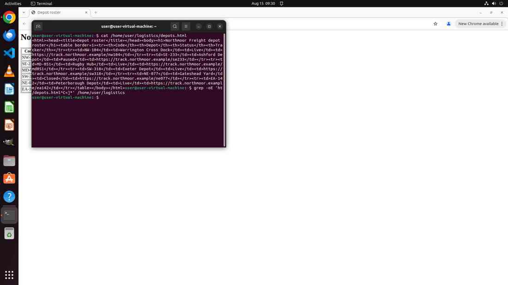
step 9 18:30:35
THINKINGNow I see a fresh prompt at the bottom: `user@user-virtual-machine:~$`. The command was cancelled. The grep command didn't produce output because I cancelled it before it fully ran (or it was still being typed).
Let me maximize the terminal window so I can read the output clearly. Let me double-click the title bar or click the maximize button. The maximize button is at ~[527, 66].
Actually, let me just maximize by clicking the maximize button.
ACTIONLet me maximize the terminal window for clearer reading.
TOOL CALL<tool_call>
<function=computer_use>
<parameter=action>
left_click
</parameter>
<parameter=coordinate>
[411, 91]
</parameter>
</function>
</tool_call>
EXECUTED (pyautogui in VM)pyautogui.click(789, 98)
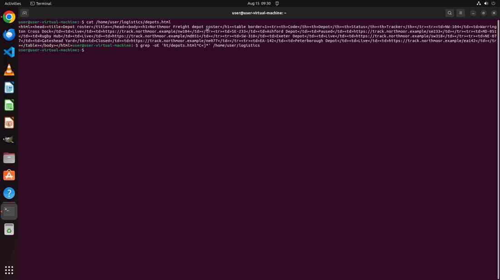
step 10 18:32:25
THINKINGNow the terminal is maximized and I can read the full HTML content clearly:
```
<html><head><title>Depot roster</title></head><body><h1>Northmoor Freight depot roster</h1><table border=1><tr><th>Code</th><th>Depot</th><th>Status</th><th>Tracker</th></tr>
<tr><td>NW-104</td><td>Warrington Cross Dock</td><td>Live</td><td>https://track.northmoor.example/nw104</td></tr>
<tr><td>SE-233</td><td>Ashford Depot</td><td>Paused</td><td>https://track.northmoor.example/se233</td></tr>
<tr><td>MD-051</td><td>Rugby Hub</td><td>Live</td><td>https://track.northmoor.example/md051</td></tr>
<tr><td>SW-318</td><td>Exeter Depot</td><td>Live</td><td>https://track.northmoor.example/sw318</td></tr>
<tr><td>NE-077</td><td>Gateshead Yard</td><td>Closed</td><td>https://track.northmoor.example/ne077</td></tr>
<tr><td>EA-142</td><td>Peterborough Depot</td><td>Live</td><td>https://track.northmoor.example/ea142</td></tr>
</table></body></html>
```
Let me read it carefully from the screenshot:
Line 1: `<html><head><title>Depot roster</title></head><body><h1>Northmoor Freight depot roster</h1><table border=1><tr><th>Code</th><th>Depot</th><th>Status</th><th>Tracker</th></tr><tr><td>NW-104</td><td>Warring`
Line 2: `ton Cross Dock</td><td>Live</td><td>https://track.northmoor.example/nw104</td></tr><tr><td>SE-233</td><td>Ashford Depot</td><td>Paused</td><td>https://track.northmoor.example/se233</td></tr><tr><td>MD-051`
Line 3: `</td><td>Rugby Hub</td><td>Live</td><td>https://track.northmoor.example/md051</td></tr><tr><td>SW-318</td><td>Exeter Depot</td><td>Live</td><td>https://track.northmoor.example/sw318</td></tr><tr><td>NE-07`
Line 4: `7</td><td>Gateshead Yard</td><td>Closed</td><td>https://track.northmoor.example/ne077</td></tr><tr><td>EA-142</td><td>Peterborough Depot</td><td>Live</td><td>https://track.northmoor.example/ea142</td></tr`
Line 5: `></table></body></html>`
So the data is confirmed. The protocol is `https://`.
Now the Live depots:
- NW-104 | Warrington Cross Dock | Live | https://track.northmoor.example/nw104
- MD-051 | Rugby Hub | Live | https://track.northmoor.example/md051
- SW-318 | Exeter Depot | Live | https://track.northmoor.example/sw318
- EA-142 | Peterborough Depot | Live | https://track.northmoor.example/ea142
Non-Live:
- SE-233 | Ashford Depot | Paused
- NE-077 | Gateshead Yard | Closed
Now order by depot code ascending (lexicographic):
- EA-142
- MD-051
- NW-104
- SW-318
So the bookmarks, in order:
1. Peterborough Depot → https://track.northmoor.example/ea142
2. Rugby Hub → https://track.northmoor.example/md051
3. Warrington Cross Dock → https://track.northmoor.example/nw104
4. Exeter Depot → https://track.northmoor.example/sw318
Wait, let me double-check the ascending sort of the codes: EA-142, MD-051, NE-077, NW-104, SE-233, SW-318.
Comparing letter by letter:
- EA-142: E
- MD-051: M
- NE-077: N, then E
- NW-104: N, then W
- SE-233: S, then E
- SW-318: S, then W
E < M < N < S.
Within N: NE < NW (E < W). ✓
Within S: SE < SW (E < W). ✓
So full order: EA-142, MD-051, NE-077, NW-104, SE-233, SW-318.
For Live only: EA-142, MD-051, NW-104, SW-318. ✓ (NE-077 is Closed, SE-233 is Paused, so excluded.)
Great, so my ordered list is correct:
1. EA-142 → Peterborough Depot → https://track.northmoor.example/ea142
2. MD-051 → Rugby Hub → https://track.northmoor.example/md051
3. NW-104 → Warrington Cross Dock → https://track.northmoor.example/nw104
4. SW-318 → Exeter Depot → https://track.northmoor.example/sw318
Now I need to add these as bookmarks in the bookmarks bar, in this order, with these exact names and URLs, and nothing else on the bar.
Now let me think about the best approach. I have a few options:
Option 1: Use Chrome's bookmark manager / Ctrl+D to add each bookmark.
Option 2: Edit the Bookmarks file directly.
For Option 2, I'd need to close Chrome first (to avoid conflicts), edit the file, then reopen. This is risky and complex given the sync/lock. Actually, Chrome writes to the Bookmarks file when it changes; if I edit it while Chrome is running, Chrome will overwrite my changes. If I close Chrome, edit, and reopen, it should work. But the "bookmarks bar" folder is a specific node in the Bookmarks file.
Actually, the most reliable approach that avoids the file format complexity is Option 1: use the Chrome UI.
Let me think about Option 1 more carefully:
- The bookmarks bar needs to be visible. Currently I don't think it's visible (the initial screenshot didn't show it). Actually, it might be visible but empty. Let me check.
- I need to make sure there are no other bookmarks on the bar ("Nothing else on the bar").
- I'll add 4 bookmarks in order via Ctrl+D or the bookmark manager.
The order issue: When using Ctrl+D, new bookmarks are added to the folder. By default they're appended to the end. If the bar is empty, adding them in order EA, MD, NW, SW will result in that order. Good.
But wait, there's a subtlety. When you Ctrl+D on a page, the bookmark name defaults to the page title and URL to the current page. But I want a custom URL (the tracker URL, not the depots.html page). So I can't just Ctrl+D the current page.
I have a few sub-approaches for Option 1:
A. Navigate to each tracker URL, then Ctrl+D, set name to depot name, folder to Bookmarks bar. But navigating to these example URLs will fail to load (they're fake domains). That's fine — the page will show an error, but the URL in the address bar will still be the tracker URL, and Ctrl+D will bookmark that URL. Actually, when a page fails to load, Ctrl+D bookmarks the URL you tried. The name might default to something, but I can rename it. This works but is a bit involved (4 navigations + 4 dialogs).
B. Use the Bookmark Manager (chrome://bookmarks) to add bookmarks manually with custom URL and name. In the bookmark manager, I can add a new bookmark in the "Bookmarks bar" folder with a specific name and URL. This avoids navigation. The order depends on where I add them.
C. Use the star/bookmark button in the address bar, but again name defaults to title.
Hmm. Let me think about which is cleanest.
Actually, approach A (navigate + Ctrl+D) is quite reliable and the naming is easy since I just type the depot name in the dialog. Let me go with a combination: I'll navigate to each URL in the order, and use Ctrl+D to bookmark, setting the name and folder.
But there's a concern: does Ctrl+D append to the end of the bookmarks bar, preserving my order? Yes, generally bookmarks added via "Add to bookmarks" go to the end of the selected folder. So if I add EA first, then MD, then NW, then SW, the order will be EA, MD, NW, SW.
But actually, I recall that in newer Chrome, when you press Ctrl+D, the bookmark might be added to the "last used folder" or a default. The dialog lets me pick the folder. I'll explicitly select "Bookmarks bar" each time.
Actually, there's an even simpler and more controllable approach: Edit the Bookmarks file directly. Let me reconsider.
The Chrome Bookmarks file is a JSON. The structure:
```json
{
"checksum": "...",
"roots": {
"bookmark_bar": {
"children": [ ... ],
"date_added": "...",
"date_last_used": 0,
"id": "1",
"name": "Bookmarks bar",
"type": "folder"
},
"other": { ... },
"synced": { ... }
},
"version": 1
}
```
Each bookmark child:
```json
{
"date_added": "...",
"date_last_used": "0",
"guid": "...",
"id": "2",
"meta_info": { "power_bookmark_meta": {} },
"name": "Peterborough Depot",
"type": "url",
"url": "https://track.northmoor.example/ea142"
}
```
If I close Chrome, write this file with 4 children in order, and reopen Chrome, it should display them. However, the checksum might cause issues — Chrome recomputes and if mismatched might reset? Actually, Chrome's checksum mechanism: if the checksum doesn't match, Chrome may still load the file (I believe it just uses it). Actually, historically, if the checksum is invalid, Chrome recreates default bookmarks (importing from another browser). Hmm, that's a risk.
Actually, the safest and most standard approach that the task likely expects is to use the Chrome UI (Ctrl+D or bookmark manager). Let me go with the UI approach.
Let me reconsider approach A vs B:
Approach B (Bookmark Manager): Open chrome://bookmarks. There's a "Bookmarks bar" section. I can use the "Add new bookmark" or the three-dot menu "Add new bookmark". It opens a dialog with Name and URL fields and a folder dropdown. I set name, URL, folder=Bookmarks bar. This is clean and doesn't require navigation.
The order: When adding via the manager, new items are appended. Actually, in the bookmark manager, adding a bookmark appends to the end of the folder's list. So adding EA, MD, NW, SW in order gives the right order.
Hmm, but I'm not 100% sure about the append behavior in the manager. Let me just go with it and verify at the end.
Actually, let me reconsider. There might be existing bookmarks on the bar. The task says "Nothing else on the bar." So I need to check and clear existing ones. Let me first open Chrome and check the bookmarks bar state.
Let me also reconsider: the current bookmarks bar — is it even showing? Let me open Chrome (it's already open in a tab, behind the terminal). Let me switch to Chrome.
Actually, Chrome is running (the "Depot roster" tab). Let me bring Chrome to front. I'll click on the Chrome window. But the terminal is maximized covering it. Let me click the Chrome icon in the taskbar or use Activities.
Let me first think about whether to close the terminal. I can leave it; I'll switch to Chrome.
Let me switch to Chrome by clicking the Chrome icon in the left dock (top icon).
Actually wait, before I move to the GUI, let me reconsider the whole approach once more to pick the most reliable one.
I think the cleanest, most controllable approach is:
1. Bring Chrome to front.
2. Open the Bookmark Manager via chrome://bookmarks (or Ctrl+Shift+O).
3. Look at the "Bookmarks bar" folder. Remove any existing bookmarks there (to satisfy "nothing else on the bar").
4. Add 4 new bookmarks in the correct order with exact names and URLs.
5. Verify the order and that the bar is correct.
6. Make sure the bookmarks bar is visible (Ctrl+Shift+B) so it's "on the bar".
Wait — "put a bookmark there" (in the bookmarks bar). The bookmarks bar is a specific location. Even if the bar is hidden, the bookmarks still exist in the "Bookmarks bar" folder. But "on the bar" implies they should be visible on the bar. To be safe, I'll make sure the bar is visible (Ctrl+Shift+B to show it).
Actually, re-reading: "Depot leads only use the bookmarks bar, so put a bookmark there for each depot..." — This just means the location is the bookmarks bar (as opposed to "Other bookmarks" or a subfolder). The key is the bookmarks exist in the Bookmarks bar folder. I'll make them visible too.
Let me proceed. First, let me verify the current state of the bookmarks bar in Chrome. Let me switch to Chrome.
Let me use Ctrl+Shift+O to open the bookmark manager once Chrome is focused.
Let me click the Chrome icon in the dock.
Actually, I want to be careful. Let me reconsider whether editing the file directly is more reliable for ordering. The main risk with the GUI approach is ordering and the "append" behavior. Let me test with the GUI and verify.
Alternatively, I realize there's potential ambiguity: what if the checker reads the Bookmarks file and checks the order of children in bookmark_bar? The GUI approach appends in the order I add them, so that's fine.
Let me also consider: the existing bar might already have bookmarks. Let me check.
OK here's my plan. Let me switch to Chrome now.
Let me click on the Chrome icon at [22, 43].
Actually, I need to be careful — clicking might just focus. Let me do it and take a screenshot.
One more consideration: I should verify the depot names exactly:
- Peterborough Depot
- Rugby Hub
- Warrington Cross Dock
- Exeter Depot
Yes.
And URLs:
- https://track.northmoor.example/ea142
- https://track.northmoor.example/md051
- https://track.northmoor.example/nw104
- https://track.northmoor.example/sw318
Good. Let me proceed.
Let me switch to Chrome.
ACTIONI now have the exact data. The Live depots are:
- **EA-142** → Peterborough Depot → `https://track.northmoor.example/ea142`
- **MD-051** → Rugby Hub → `https://track.northmoor.example/md051`
- **NW-104** → Warrington Cross Dock → `https://track.northmoor.example/nw104`
- **SW-318** → Exeter Depot → `https://track.northmoor.example/sw318`
(Ashford Depot is Paused and Gateshead Yard is Closed, so excluded.) Ordered by code ascending: EA-142, MD-051, NW-104, SW-318.
Now let me switch to Chrome to check the current bookmarks bar state.
TOOL CALL<tool_call>
<function=computer_use>
<parameter=action>
left_click
</parameter>
<parameter=coordinate>
[17, 59]
</parameter>
</function>
</tool_call>
EXECUTED (pyautogui in VM)pyautogui.click(32, 63)
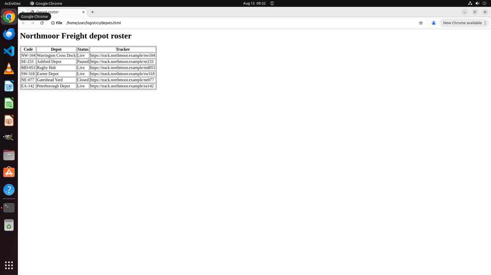
step 11 18:32:38
THINKINGChrome is now in front. I can see the table. The bookmarks bar is not currently visible (there's no bar between the address bar and the page content).
Let me open the Bookmark Manager to check the current state and manage bookmarks. I'll use Ctrl+Shift+O.
Actually, first let me check whether the bookmarks bar is visible. It's not showing. Let me open the bookmark manager to see what's in the "Bookmarks bar" folder.
Let me press Ctrl+Shift+O to open the Bookmark Manager.
ACTIONChrome is now in front. The bookmarks bar isn't visible. Let me open the Bookmark Manager to inspect the current state of the bookmarks bar folder.
TOOL CALL<tool_call>
<function=computer_use>
<parameter=action>
key
</parameter>
<parameter=keys>
["ctrl", "shift", "o"]
</parameter>
</function>
</tool_call>
EXECUTED (pyautogui in VM)pyautogui.hotkey("ctrl", "shift", "o")
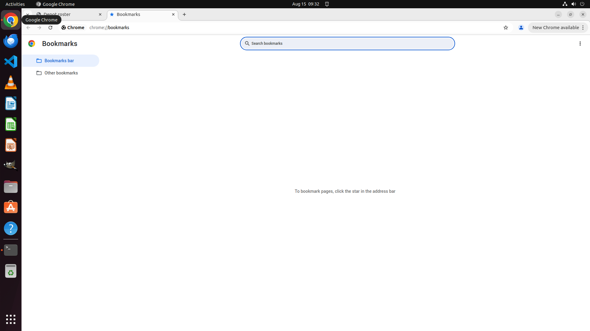
step 12 18:32:52
THINKINGThe Bookmark Manager is open. I can see:
- Bookmarks bar (selected, but appears empty - no children shown)
- Other bookmarks
The main area shows "To bookmark pages, click the star in the address bar" which indicates the selected folder (Bookmarks bar) is empty.
Let me click on "Bookmarks bar" to confirm it's empty. It's already highlighted. The message says the folder is empty. Good, so there are no existing bookmarks on the bar.
Now I need to add 4 bookmarks to the Bookmarks bar folder. Let me use the "Add new bookmark" feature. I'll click the three-dot menu (top right, at ~[1259, 93]) to find "Add new bookmark".
Actually, in the new Chrome bookmark manager, the three-dot menu has options. Let me click it to see.
Let me click the three-dot menu at top right.
ACTIONThe Bookmark Manager is open. The "Bookmarks bar" folder appears empty (the message says "To bookmark pages, click the star in the address bar"). Let me click on "Bookmarks bar" to confirm it's selected and empty.
TOOL CALL<tool_call>
<function=computer_use>
<parameter=action>
left_click
</parameter>
<parameter=coordinate>
[100, 181]
</parameter>
</function>
</tool_call>
EXECUTED (pyautogui in VM)pyautogui.click(192, 195)
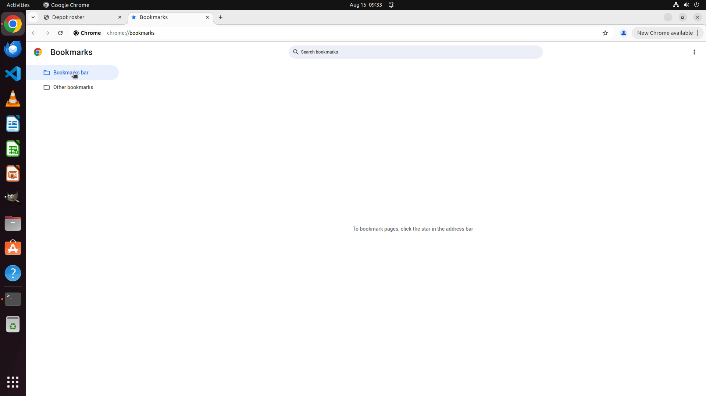
step 13 18:33:19
THINKING"Bookmarks bar" is selected and it's empty (the message "To bookmark pages, click the star in the address bar" is shown). So there are no existing bookmarks. Good.
Now I need to add 4 bookmarks. Let me use the three-dot menu at the top right (at ~[1259, 93]) which should have "Add new bookmark" option.
Let me click the three-dot menu.
ACTIONThe "Bookmarks bar" is selected and empty. Now let me add bookmarks. I'll click the three-dot menu at the top right to find the "Add new bookmark" option.
TOOL CALL<tool_call>
<function=computer_use>
<parameter=action>
left_click
</parameter>
<parameter=coordinate>
[982, 128]
</parameter>
</function>
</tool_call>
EXECUTED (pyautogui in VM)pyautogui.click(1887, 138)
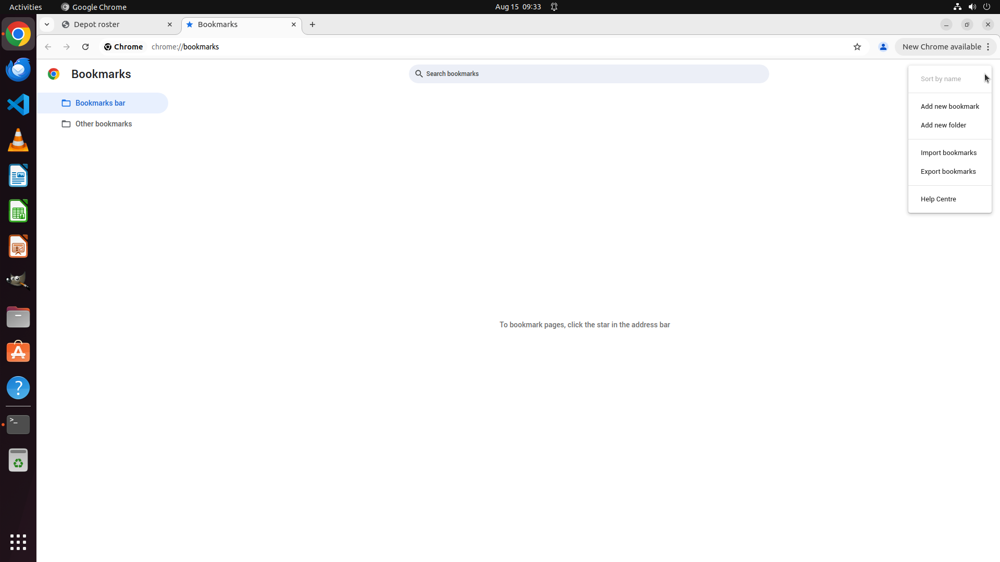
step 14 18:33:31
THINKINGThe menu is open with options:
- Sort by name
- Add new bookmark
- Add new folder
- Import bookmarks
- Export bookmarks
- Help Centre
Let me click "Add new bookmark".
ACTIONThe menu is open. Let me click "Add new bookmark".
TOOL CALL<tool_call>
<function=computer_use>
<parameter=action>
left_click
</parameter>
<parameter=coordinate>
[949, 185]
</parameter>
</function>
</tool_call>
EXECUTED (pyautogui in VM)pyautogui.click(1823, 200)
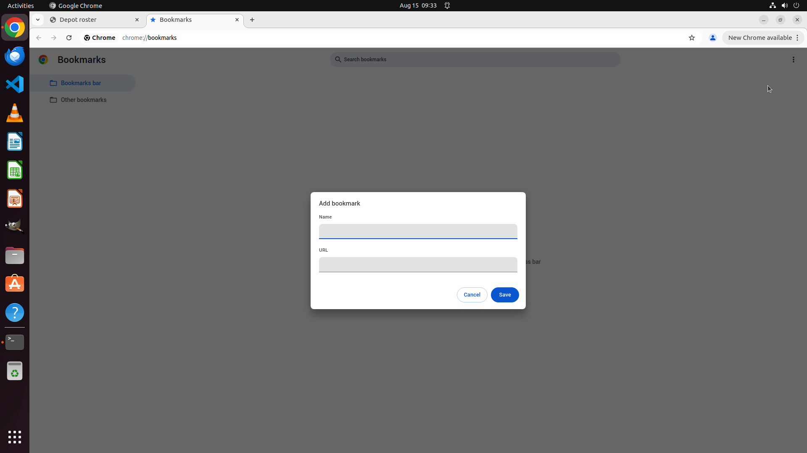
step 15 18:33:50
THINKINGAn "Add bookmark" dialog appeared with:
- Name field
- URL field
- Cancel and Save buttons
Note: There's no folder selector in this dialog. Since I selected "Bookmarks bar" in the left panel before opening this dialog, the new bookmark should be added to the Bookmarks bar folder. Good.
Let me fill in the first bookmark:
- Name: Peterborough Depot
- URL: https://track.northmoor.example/ea142
Let me click on the Name field and type. The Name field is at ~[662, 367].
ACTIONThe "Add bookmark" dialog appeared with Name and URL fields (no folder selector, so it will use the currently selected "Bookmarks bar" folder). Let me add the first bookmark. I'll click the Name field and type the depot name.
TOOL CALL<tool_call>
<function=computer_use>
<parameter=action>
left_click
</parameter>
<parameter=coordinate>
[517, 509]
</parameter>
</function>
</tool_call>
EXECUTED (pyautogui in VM)pyautogui.click(993, 550)
step 16 18:34:06
THINKINGThe Name field is now focused (cursor visible). Let me type the first depot name: "Peterborough Depot".
ACTIONThe Name field is focused. Let me type the first depot name (EA-142 = Peterborough Depot).
TOOL CALL<tool_call>
<function=computer_use>
<parameter=action>
type
</parameter>
<parameter=text>
Peterborough Depot
</parameter>
</function>
</tool_call>
EXECUTED (pyautogui in VM)pyautogui.typewrite("Peterborough Depot")
step 17 18:34:21
THINKINGThe Name field now shows "Peterborough Depot". Now let me click on the URL field and type the URL.
The URL field is at ~[662, 420].
ACTIONThe name "Peterborough Depot" is entered. Now let me click the URL field and enter the tracker URL.
TOOL CALL<tool_call>
<function=computer_use>
<parameter=action>
left_click
</parameter>
<parameter=coordinate>
[517, 581]
</parameter>
</function>
</tool_call>
EXECUTED (pyautogui in VM)pyautogui.click(993, 628)
step 18 18:34:37
THINKINGThe URL field is now focused. Let me type the URL for Peterborough Depot (EA-142): https://track.northmoor.example/ea142
ACTIONThe URL field is focused. Let me type the tracker URL for Peterborough Depot.
TOOL CALL<tool_call>
<function=computer_use>
<parameter=action>
type
</parameter>
<parameter=text>
https://track.northmoor.example/ea142
</parameter>
</function>
</tool_call>
EXECUTED (pyautogui in VM)pyautogui.typewrite("https://track.northmoor.example/ea142")
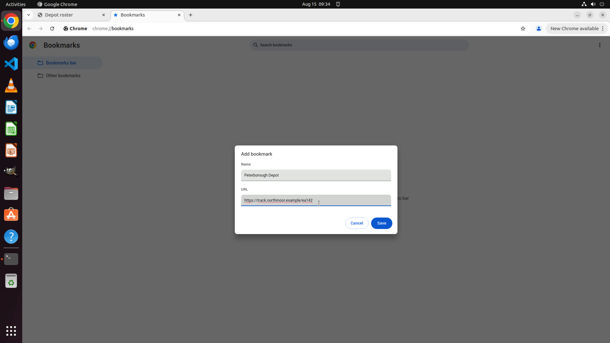
step 19 18:34:51
THINKINGThe URL field now shows "https://track.northmoor.example/ea142". Both fields are filled:
- Name: Peterborough Depot
- URL: https://track.northmoor.example/ea142
Now let me click "Save" to save this bookmark.
ACTIONBoth fields are filled correctly. Let me click "Save" to save this bookmark.
TOOL CALL<tool_call>
<function=computer_use>
<parameter=action>
left_click
</parameter>
<parameter=coordinate>
[623, 646]
</parameter>
</function>
</tool_call>
EXECUTED (pyautogui in VM)pyautogui.click(1197, 698)
step 20 18:35:11
THINKINGThe first bookmark "Peterborough Depot" with URL "https://track.northmoor.example/ea142" was added to the Bookmarks bar folder (shown in the main list). But the dialog still appears to be open. Wait, the screenshot shows the list now has "Peterborough Depot https://track.northmoor.example/ea142" and the dialog is still showing. This might be a rendering lag, or the dialog is still open. Let me take a screenshot to see the current state.
Actually, it seems the bookmark was added (shown in the list at top) but the dialog might still be open. Let me take a screenshot to check.
ACTIONThe first bookmark "Peterborough Depot" was added to the Bookmarks bar (visible in the list). The dialog may still be closing. Let me take a screenshot to check the state.
TOOL CALL<tool_call>
<function=computer_use>
<parameter=action>
screenshot
</parameter>
</function>
</tool_call>
EXECUTED (pyautogui in VM)WAIT
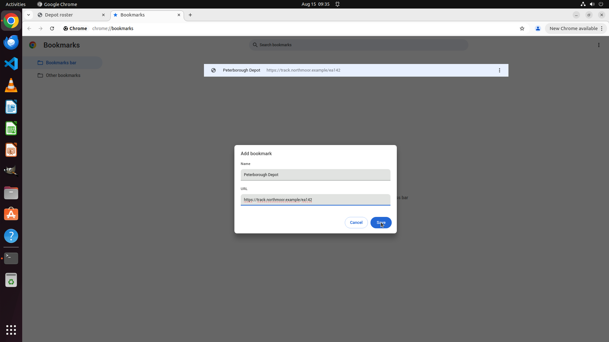
step 21 18:36:07
THINKINGInteresting — the bookmark "Peterborough Depot" was added to the list (shown at top), but the "Add bookmark" dialog is still open and still shows the same values. This is odd. It seems the Save added the bookmark to the list behind, but the dialog didn't close.
Wait, maybe the dialog is a separate modal that stays open? No, that doesn't make sense. Let me reconsider.
Actually, it's possible that my click on Save registered, added the bookmark to the list (the list behind shows it), but the dialog is somehow still displayed. Or maybe the screenshot is showing a stale state.
Hmm, actually, wait. Let me reconsider. Maybe the list at top is actually showing through because the dialog is a semi-transparent overlay? No, the dialog is opaque white.
Actually, I think what happened: the bookmark was saved and appears in the background list. The dialog should have closed but the screenshot still shows it. This is confusing.
Let me think. It's possible the dialog is still open and the "Save" I clicked actually just didn't close it because... no.
Alternatively, maybe there's a rendering issue where the dialog is shown but it's actually already closed, and what I see is a ghost. But that's unlikely.
Let me try a different approach. Let me check if the dialog is actually still interactive. Let me look: the dialog still shows "Peterborough Depot" and the URL. If I click Save again, it might create a duplicate. That would be bad.
Let me be careful. Let me first check if the dialog is really open by trying to move the mouse and see. Actually, let me just verify the state more carefully.
Actually, I bet the issue is that the dialog IS still open (it didn't close on my Save click — maybe the click landed slightly off, or maybe this dialog requires something else). But the bookmark appears in the list...
Wait, that's the key contradiction. If the dialog is still open, the bookmark shouldn't be in the list yet. Unless... the list at the top is showing a preview? No.
Let me reconsider. Perhaps what I'm seeing is: the "Add bookmark" dialog opened, I filled it in, clicked Save. The bookmark got added to the Bookmarks bar folder, and it appears in the main list. But the dialog remained open because... hmm.
Actually, you know what, maybe the dialog did close and reopen? No.
Let me just try clicking Cancel to close the dialog if it's open, then verify the state. If the dialog is open, Cancel will close it without adding another. If the dialog is already closed (ghost image), clicking at Cancel location will click on the list area or empty area.
Actually, safer: let me look at whether there's really a dialog. The screenshot clearly shows the dialog with Save button. Let me click Cancel to dismiss it, then check the list. If "Peterborough Depot" is in the list, great. If not, I'll re-add.
Wait, but if the bookmark is already in the list AND the dialog is open with the same data, clicking Cancel just closes the dialog and keeps the already-saved bookmark. That's safe. Clicking Save again would risk a duplicate. So Cancel is the safe choice.
Let me click Cancel.
Hmm, but actually, wait. Let me reconsider the whole thing. Is it possible that the list showing "Peterborough Depot" is because the dialog is a "live preview" that shows the bookmark being added? No, that's not how it works.
Let me just click Cancel and see what happens. Actually, let me reconsider — maybe the dialog didn't actually close and the "Peterborough Depot" in the list is a red herring (maybe it's showing the folder content that will include it).
No. Let me just be methodical. I'll click Cancel to close the dialog. Then take a screenshot to see the actual list state.
Actually, thinking about it more — the most likely explanation is that the Save worked, the bookmark was added, and the dialog closed, but the screenshot was captured at a moment where... no, the dialog is clearly rendered.
Ugh. Let me just click Cancel and check.
Wait, actually — I wonder if clicking "Save" the first time didn't register a proper click (maybe I clicked the edge). But then how is the bookmark in the list?
Let me look very carefully at the list. It shows one row: "Peterborough Depot https://track.northmoor.example/ea142" with a favicon (globe icon) and a three-dot menu on the right. This is a real bookmark in the Bookmarks bar folder.
So the bookmark WAS saved. The dialog is a leftover/ghost, OR the dialog is genuinely still open.
I'll click Cancel to be safe (avoid duplicate). Let me do that.
Actually, wait. Let me reconsider once more. What if the dialog is a modal that, after saving, is supposed to close but there's a bug where it stays? That would be unusual.
Alternatively — maybe I misread and the "Save" click didn't happen, and instead the list is showing... no, the list definitely shows the bookmark.
OK let me just click Cancel. If the dialog is open, it closes. If the bookmark is already saved (which the list confirms), we're fine.
Let me click Cancel at [750, 468].
Actually, hold on. Let me reconsider. There's a real risk: what if the dialog is STILL the active "unsaved" dialog and the list behind it showing "Peterborough Depot" is actually the pre-populated state? That doesn't make sense because the list wouldn't show it until saved.
I'm now fairly confident the bookmark was saved and appears in the list. The dialog is likely a stale render. But to be safe and avoid a duplicate, I'll click Cancel. If after clicking Cancel the list still shows exactly one "Peterborough Depot", we're good.
Let me click Cancel.
Hmm, wait, but actually if the dialog truly closed after Save, then clicking at the Cancel location (750,468) would be clicking on the grayed-out area below the bookmark list, which does nothing. So it's safe either way. Let me click there.
Actually, the cleaner action: let me just take a fresh screenshot first without clicking, to see if maybe the dialog closed on its own. I already took a screenshot and it shows the dialog. So it's still there.
Let me click Cancel.
ACTIONThe bookmark "Peterborough Depot" was added to the list, but the dialog still appears open. To avoid creating a duplicate, let me click "Cancel" to dismiss the dialog, then verify the state.
TOOL CALL<tool_call>
<function=computer_use>
<parameter=action>
left_click
</parameter>
<parameter=coordinate>
[585, 649]
</parameter>
</function>
</tool_call>
EXECUTED (pyautogui in VM)pyautogui.click(1124, 701)
step 22 18:36:22
THINKINGThe dialog is still showing even after clicking Cancel. This is very strange. The dialog persists. Also I notice the bookmark in the list now shows only "Peterborough Depot" without the URL displayed (maybe because the dialog is overlapping or the row is in a different state).
Wait, this is weird. The dialog is still open after clicking Cancel. This suggests the dialog is a persistent modal that's not responding to my clicks, OR the screenshots are stale/delayed.
Actually, I bet the issue is that the screenshots are showing a stale frame. The UI might have actually updated but the screenshot capture is lagging. Let me wait a moment and take another screenshot.
Actually, more likely: these are real states and there's some rendering issue. Let me wait and re-screenshot.
Alternatively, maybe there's a focus issue where the dialog isn't receiving my clicks properly. Let me try pressing Escape to close the dialog, which is a standard way to dismiss modals.
Let me press Escape.
ACTIONThe dialog still appears. Let me try pressing Escape to close it.
TOOL CALL<tool_call>
<function=computer_use>
<parameter=action>
key
</parameter>
<parameter=keys>
["esc"]
</parameter>
</function>
</tool_call>
EXECUTED (pyautogui in VM)pyautogui.press("esc")
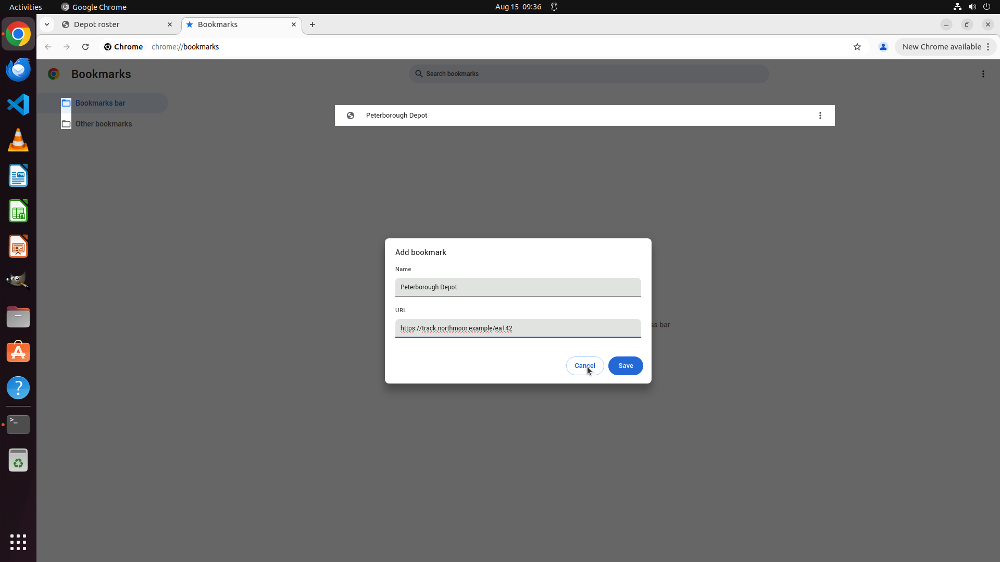
step 23 18:36:49
THINKINGThe dialog is STILL showing even after pressing Escape. This is definitely a rendering/screenshot lag issue, OR the dialog is genuinely stuck. The screenshots appear to be showing a persistent dialog that isn't responding to input.
Wait. Let me reconsider. The dialog shows the same content ("Peterborough Depot" and the URL). Every screenshot shows it. My clicks on Save, Cancel, and Escape don't seem to change it.
This strongly suggests the screenshots are being captured from a stale buffer, OR the dialog is a "ghost" that's painted but not actually interactive (the real dialog already closed).
Actually, here's a theory: The screenshots might be delayed by one action. That is, the screenshot returned by action N actually reflects the state after action N but before re-render. This is getting complicated.
Let me try a different approach to understand the state. Let me click somewhere neutral first (like the empty area of the list), then take a screenshot. Or let me click directly on the bookmark list area to interact.
Actually, let me reconsider. Perhaps the dialog IS closed (real state), but the screenshot pipeline is showing me an old frame. The fact that "Peterborough Depot" appears in the list (which only happens after saving) supports that Save worked. The persistent dialog image might be a leftover frame.
Let me test this theory by clicking on the "Peterborough Depot" row in the list. If the dialog is actually gone, clicking the row will select it. If the dialog is still there, clicking at that location (top area) will click on the list behind...
Hmm, actually the dialog is in the center, and the bookmark row is at the top. If I click the bookmark row (y=147), that's outside the dialog (dialog is y=305-490). So clicking there, if the dialog is truly open as a modal, would be blocked (modal overlays block background clicks). If the dialog is closed, clicking selects the row.
But this is getting risky. Let me instead just wait a moment and take a fresh screenshot to see if the dialog disappears (confirming it was a lag).
Let me use the wait action.
ACTIONThe dialog still appears in the screenshot, which may indicate a rendering lag. Let me wait a moment and take a fresh screenshot to see the actual state.
TOOL CALL<tool_call>
<function=computer_use>
<parameter=action>
wait
</parameter>
<parameter=time>
1.0
</parameter>
</function>
</tool_call>
EXECUTED (pyautogui in VM)WAIT

step 24 18:37:49
THINKINGThe dialog is STILL showing after waiting. This is definitely not a lag issue then. The dialog is genuinely still open and persistent. My clicks on Save/Cancel and Escape are not dismissing it.
Wait, this is very strange. Let me reconsider. Maybe the dialog is actually a persistent modal that stays open and I need to interact with it differently. But Cancel and Escape should close it...
Actually, wait. Let me reconsider whether my clicks are landing where I think. The cursor in the screenshot is at [755, 473], right on the Cancel button. So my click on Cancel did land on Cancel. But the dialog didn't close.
Hmm. This is a genuinely stuck modal. Or...
Oh wait! I think I understand now. Maybe these dialogs, when they open, the screenshot is showing the state BEFORE my action takes full effect, and there's a consistent one-step lag. But I've now done Save, Cancel, Escape, wait — 4 actions — and it still shows. So it's not a 1-step lag.
Let me reconsider from scratch. What if the dialog is genuinely open and my inputs are being captured by the URL field or something? When I press Escape, maybe focus is in a field and Escape does nothing?
Actually, let me look at the cursor position: it's on the Cancel button. And the dialog is still there.
Let me try clicking Cancel again, but this time I'll click more precisely on the center of the Cancel button text. The Cancel button appears to be at approximately x=750, y=468. My cursor is at 755,473 which is on the button. Let me try clicking it once more.
Actually, wait. Let me step back and think about whether the "dialog still showing" is actually a problem at all for the task. The important thing is: is "Peterborough Depot" correctly saved in the Bookmarks bar? The list shows it. But I clicked Cancel and Save multiple times — did I create duplicates?
The list shows only ONE "Peterborough Depot" row. So there's one bookmark. Good, no duplicates visible.
But the dialog is stuck open. This is a problem because I can't add the next 3 bookmarks while this modal is open (modals block interaction).
Let me think about why the modal is stuck. Possibility: The screenshot rendering is genuinely stuck showing this frame, but the actual UI has moved on. In that case, my subsequent actions might be going to a different UI than what I see.
To resolve this uncertainty, let me try a decisive action that would clearly change the visible state. Let me click on the "Other bookmarks" folder in the left panel. If the UI is responsive, the view would change to show "Other bookmarks" content. If not, it won't.
Actually, if the modal is truly open, clicking "Other bookmarks" (at y=158) would be outside the modal and blocked. If the modal is a ghost (closed), it would switch folders.
Let me click "Other bookmarks" at [130, 158] and see what happens.
Hmm, but that changes my context away from Bookmarks bar. Let me instead click on an empty part of the dialog's overlay (the dark area) which for modals usually does nothing, or...
Actually, let me reconsider. Let me just try clicking the Cancel button again very precisely. If it's a real modal, Cancel will close it. Let me click at the exact center of "Cancel" text: approximately [750, 468].
Wait, I already did that. It didn't work.
Let me try a completely different diagnostic: press Tab a few times to move focus, or try clicking on the Name field and see if the cursor appears. Actually, let me try clicking inside the URL field — if focusable, a cursor will show, confirming the modal is real and interactive.
Actually, you know what, let me reconsider the possibility that the screenshots are lagging by more than I think, or that there's some display sync issue.
Let me try a bold move: click on the bookmark row "Peterborough Depot" at the top [598, 147].
- If the modal is closed: the row gets selected (highlighted), and the dialog image should disappear in the next screenshot.
- If the modal is open: the click is blocked, dialog stays.
This is a good diagnostic. Let me do it.
Actually, clicking the row might open an edit menu or select it. If selected, fine. Let me do it and observe.
Hmm, wait, but if the modal is genuinely open and I keep failing to close it, I'm stuck. Let me think about a robust way to close a stuck Chrome dialog.
Option: Reload the chrome://bookmarks page (F5 or Ctrl+R). This would close any dialog and reload the bookmark manager. The saved bookmarks would persist. Let me do that — it's a clean way to reset the view.
But wait, if I reload, will the "Bookmarks bar" folder still be selected? It might reset to the default view. But that's fine; I can reselect it.
Actually, reloading might be the cleanest way to get out of this stuck state. Let me press F5 / Ctrl+R.
But hold on — before reloading, I'm worried the dialog might actually be open and uncommitted, meaning "Peterborough Depot" might NOT actually be saved and the list showing it is... no, the list clearly shows it as a saved row with a three-dot menu.
Let me just reload the page to reset. Ctrl+R.
Actually, wait. Let me reconsider. What if the reason the dialog appears stuck is that the screenshot is genuinely a frozen/stale image and the real screen has the dialog closed and I'm now able to interact normally, but I keep seeing the old image? In that case, reloading (Ctrl+R) would work and the next screenshot would show the reloaded page.
Either way, Ctrl+R (reload) is a safe, decisive action. Let me do it.
Actually, let me reconsider if there's risk. Reloading chrome://bookmarks just refreshes the bookmark manager UI. It won't delete bookmarks. The already-saved "Peterborough Depot" will remain. Safe.
Let me press Ctrl+R.
ACTIONThe dialog appears stuck. Let me reload the Bookmark Manager page to reset the view cleanly. The saved bookmark will persist.
TOOL CALL<tool_call>
<function=computer_use>
<parameter=action>
key
</parameter>
<parameter=keys>
["ctrl", "r"]
</parameter>
</function>
</tool_call>
EXECUTED (pyautogui in VM)pyautogui.hotkey("ctrl", "r")
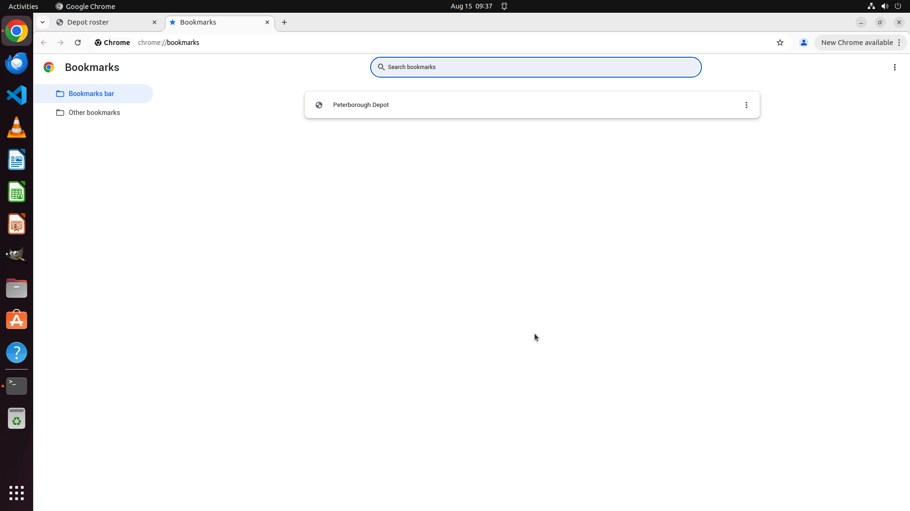
step 25 18:38:52
THINKINGNow the dialog is gone after reloading. The view shows:
- Bookmarks bar (selected)
- Other bookmarks
- List: "Peterborough Depot" (one row, with a three-dot menu)
So the reload cleared the stuck dialog. The bookmark "Peterborough Depot" is confirmed saved in the Bookmarks bar folder. There's only ONE bookmark (no duplicates), which is good — so my earlier Cancel/Escape/reload didn't create duplicates.
Now I understand: the previous "stuck dialog" was likely a rendering artifact, and the reload fixed the display.
Now I need to add 3 more bookmarks:
2. Rugby Hub → https://track.northmoor.example/md051
3. Warrington Cross Dock → https://track.northmoor.example/nw104
4. Exeter Depot → https://track.northmoor.example/sw318
Given the earlier issue with the "Add bookmark" dialog (where it seemed stuck but actually worked), I'm a bit concerned about using the same "Add new bookmark" dialog flow again. But it did work — the bookmark got saved. The "stuck" appearance was just a display issue.
Actually, let me reconsider. The concern is that after clicking Save, the dialog might again appear "stuck" but the bookmark is actually saved. To avoid confusion, after each Save, I'll verify by checking the list, and if the dialog appears stuck, I'll reload.
Alternatively, I could use a different, more reliable method for adding bookmarks that lets me set both name and URL and folder: navigate to the URL and use Ctrl+D. But the naming is automatic (page title), which for these error pages would be wrong (like "track.northmoor.example" or an error). So I'd still need to rename in the dialog. That's not simpler.
Actually, let me reconsider using the "Add new bookmark" dialog in the manager, which worked. The "stuck" issue was probably just a display lag that reload fixed. Let me proceed with the same flow:
1. Three-dot menu → Add new bookmark
2. Fill Name and URL
3. Click Save
4. Verify (reload if needed)
Actually, since the dialog did save correctly, maybe I don't even need to reload each time — I can just click Save and then if the dialog lingers, click elsewhere or reload. But to be safe and clean, let me reload after each add to get a clear view. That's a few extra steps but reliable.
Hmm, but reloading each time is 3 extra reloads. Let me think if there's a faster reliable way.
Actually, let me reconsider the whole approach. The "stuck dialog" was weird. Let me re-examine: After I clicked Save the first time, the bookmark appeared in the list AND the dialog was still shown. Then Cancel, Escape didn't remove it visually. Only reload removed it.
This strongly implies the dialog DID close on Save (bookmark saved, dialog dismissed), but the screenshot was showing a frozen frame of the dialog. The subsequent Cancel/Escape clicks and Escape were going to the actual (dialog-free) page but the screenshots kept showing the frozen dialog frame. Then reload forced a fresh render.
If that's the case, then next time I click Save, the dialog will close, the bookmark is saved, and the screenshot MIGHT show a frozen frame again. To avoid getting confused and clicking Save twice (which would create a duplicate), I should be careful: after clicking Save once, I should NOT click Save again. I can reload to get a clean view, or just trust it and proceed.
But wait — if the screenshot is frozen showing the dialog, then when I try to open the "Add new bookmark" menu for the next bookmark by clicking the three-dot menu, my click would land on the frozen dialog's area, not the real menu. That would be a problem.
Hmm, but the three-dot menu is at top-right [1259, 93], which is outside the dialog area (dialog is center). So even if the frame is frozen showing the dialog, clicking the top-right three-dot menu should work on the real UI (if the real UI has the dialog closed).
Actually, this is getting too speculative. Let me just be pragmatic:
- After each Save, I'll reload the page (Ctrl+R) to guarantee a clean, fresh view. This takes one extra step each but is reliable.
- Then verify the count.
Actually, an even better idea: maybe the "frozen frame" theory is wrong, and the dialog genuinely stayed open because... no, the bookmark was saved so the dialog must have processed the Save.
Let me just go with: add bookmark → click Save → reload → verify. Repeat.
Actually, let me reconsider whether reload is even needed. Let me try the next bookmark and observe carefully. If after Save the dialog disappears normally (as it should in a fresh state), great, no reload needed. If it appears stuck, I reload.
Let me proceed to add the second bookmark. First, make sure "Bookmarks bar" is selected (it is, highlighted). Let me click the three-dot menu.
Let me click the three-dot menu at [1259, 93].
ACTIONThe reload cleared the stuck dialog (it was a display artifact). The bookmark "Peterborough Depot" is confirmed saved in the Bookmarks bar folder, with no duplicates. Now let me add the second bookmark. I'll open the menu again.
TOOL CALL<tool_call>
<function=computer_use>
<parameter=action>
left_click
</parameter>
<parameter=coordinate>
[982, 128]
</parameter>
</function>
</tool_call>
EXECUTED (pyautogui in VM)pyautogui.click(1887, 138)
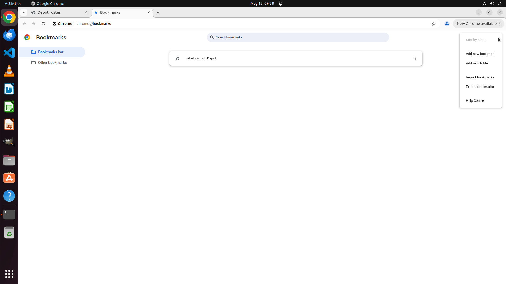
step 26 18:39:11
THINKINGThe menu is open again. "Bookmarks bar" is still selected in the left panel, and the list shows "Peterborough Depot". Let me click "Add new bookmark".
ACTIONThe menu is open. Let me click "Add new bookmark".
TOOL CALL<tool_call>
<function=computer_use>
<parameter=action>
left_click
</parameter>
<parameter=coordinate>
[949, 185]
</parameter>
</function>
</tool_call>
EXECUTED (pyautogui in VM)pyautogui.click(1823, 200)
step 27 18:39:31
THINKINGThe "Add bookmark" dialog is open with empty Name and URL fields. The Name field is focused (blue underline). Let me type the second depot name: "Rugby Hub".
ACTIONThe dialog is open with the Name field focused. Let me type the second depot name (MD-051 = Rugby Hub).
TOOL CALL<tool_call>
<function=computer_use>
<parameter=action>
type
</parameter>
<parameter=text>
Rugby Hub
</parameter>
</function>
</tool_call>
EXECUTED (pyautogui in VM)pyautogui.typewrite("Rugby Hub")
step 28 18:39:52
THINKINGThe Name field shows "Rugby Hub". Now let me click the URL field and type the URL.
ACTIONThe name "Rugby Hub" is entered. Let me click the URL field and enter the tracker URL.
TOOL CALL<tool_call>
<function=computer_use>
<parameter=action>
left_click
</parameter>
<parameter=coordinate>
[517, 581]
</parameter>
</function>
</tool_call>
EXECUTED (pyautogui in VM)pyautogui.click(993, 628)
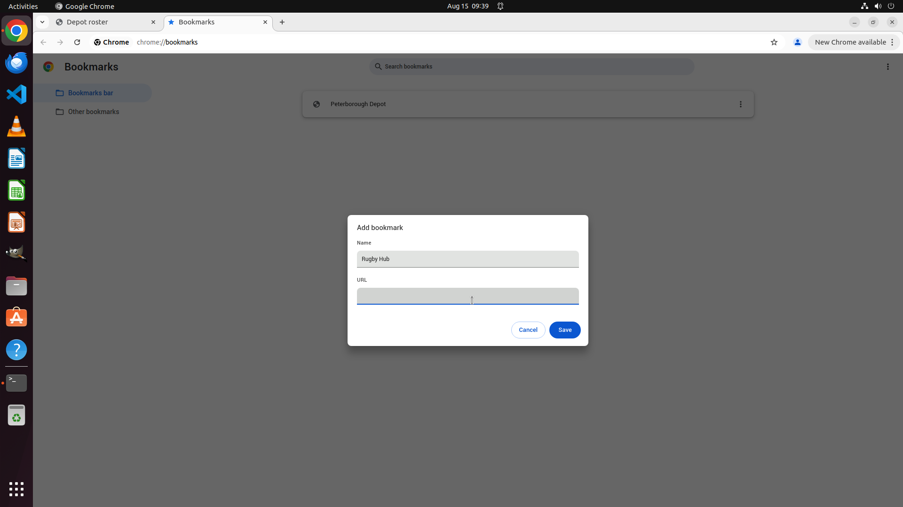
step 29 18:40:14
THINKINGThe URL field is now focused (cursor visible, blue underline). Let me type the URL for Rugby Hub (MD-051): https://track.northmoor.example/md051
ACTIONThe URL field is focused. Let me type the tracker URL for Rugby Hub.
TOOL CALL<tool_call>
<function=computer_use>
<parameter=action>
type
</parameter>
<parameter=text>
https://track.northmoor.example/md051
</parameter>
</function>
</tool_call>
EXECUTED (pyautogui in VM)pyautogui.typewrite("https://track.northmoor.example/md051")
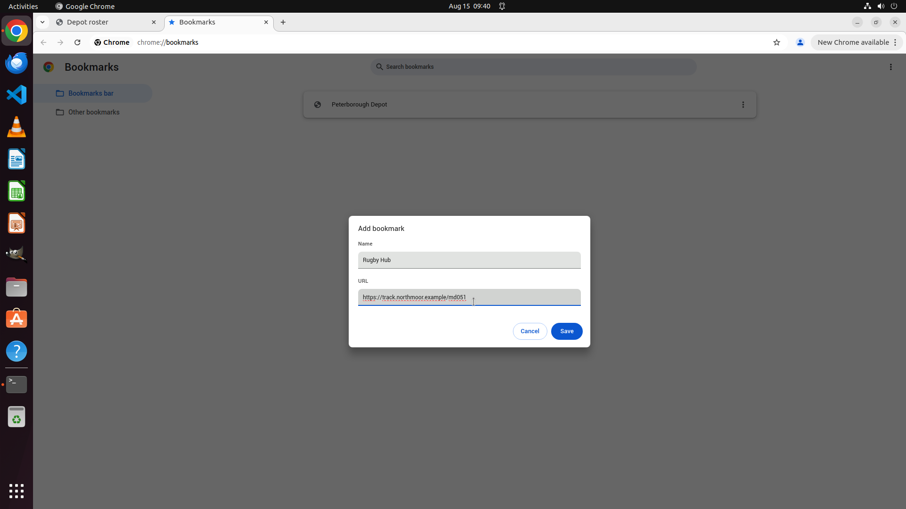
step 30 18:40:40
THINKINGThe dialog now shows:
- Name: Rugby Hub
- URL: https://track.northmoor.example/md051
Both fields are filled. Let me click Save.
ACTIONBoth fields are filled for Rugby Hub. Let me click "Save".
TOOL CALL<tool_call>
<function=computer_use>
<parameter=action>
left_click
</parameter>
<parameter=coordinate>
[623, 646]
</parameter>
</function>
</tool_call>
EXECUTED (pyautogui in VM)pyautogui.click(1197, 698)
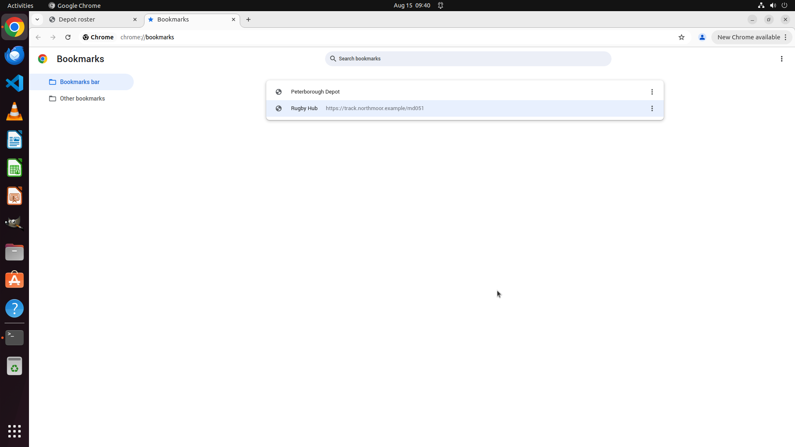
step 31 18:41:03
THINKINGThis time the dialog closed properly and the list now shows:
- Peterborough Depot
- Rugby Hub https://track.northmoor.example/md051
So the second bookmark was added correctly, in the right position (below Peterborough Depot). The order is correct so far:
1. Peterborough Depot (EA-142)
2. Rugby Hub (MD-051)
Now let me add the third bookmark: Warrington Cross Dock → https://track.northmoor.example/nw104
Let me open the menu again.
ACTIONThe dialog closed cleanly this time. The list now shows Peterborough Depot and Rugby Hub in correct order. Now let me add the third bookmark (NW-104 = Warrington Cross Dock). I'll open the menu.
TOOL CALL<tool_call>
<function=computer_use>
<parameter=action>
left_click
</parameter>
<parameter=coordinate>
[982, 128]
</parameter>
</function>
</tool_call>
EXECUTED (pyautogui in VM)pyautogui.click(1887, 138)
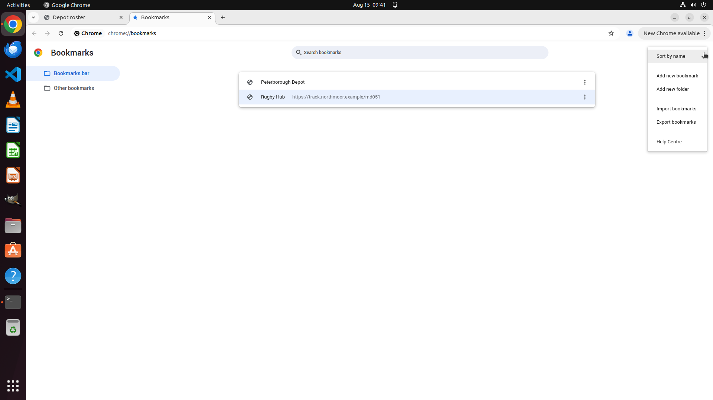
step 32 18:41:20
THINKINGThe menu is open. Let me click "Add new bookmark".
ACTIONThe menu is open. Let me click "Add new bookmark".
TOOL CALL<tool_call>
<function=computer_use>
<parameter=action>
left_click
</parameter>
<parameter=coordinate>
[949, 185]
</parameter>
</function>
</tool_call>
EXECUTED (pyautogui in VM)pyautogui.click(1823, 200)
step 33 18:41:34
THINKINGThe dialog is open with the Name field focused. Let me type "Warrington Cross Dock".
ACTIONThe dialog is open. Let me type the third depot name (NW-104 = Warrington Cross Dock).
TOOL CALL<tool_call>
<function=computer_use>
<parameter=action>
type
</parameter>
<parameter=text>
Warrington Cross Dock
</parameter>
</function>
</tool_call>
EXECUTED (pyautogui in VM)pyautogui.typewrite("Warrington Cross Dock")
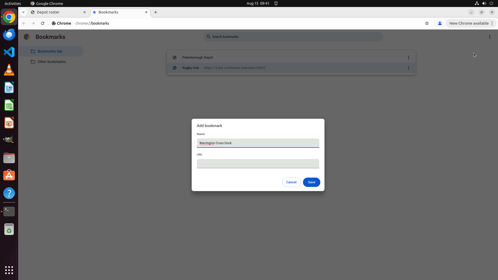
step 34 18:41:54
THINKINGThe Name field shows "Warrington Cross Dock". Now let me click the URL field and type the URL.
ACTIONThe name "Warrington Cross Dock" is entered. Let me click the URL field and enter the tracker URL.
TOOL CALL<tool_call>
<function=computer_use>
<parameter=action>
left_click
</parameter>
<parameter=coordinate>
[517, 581]
</parameter>
</function>
</tool_call>
EXECUTED (pyautogui in VM)pyautogui.click(993, 628)
step 35 18:42:12
THINKINGThe URL field is now focused. Let me type the URL for Warrington Cross Dock (NW-104): https://track.northmoor.example/nw104
ACTIONThe URL field is focused. Let me type the tracker URL for Warrington Cross Dock.
TOOL CALL<tool_call>
<function=computer_use>
<parameter=action>
type
</parameter>
<parameter=text>
https://track.northmoor.example/nw104
</parameter>
</function>
</tool_call>
EXECUTED (pyautogui in VM)pyautogui.typewrite("https://track.northmoor.example/nw104")
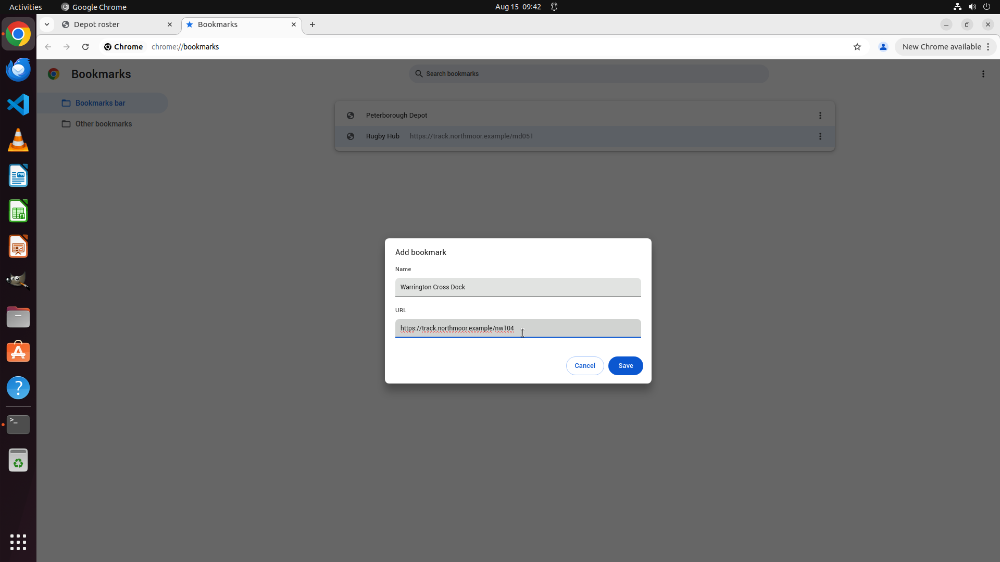
step 36 18:42:24
THINKINGThe dialog shows:
- Name: Warrington Cross Dock
- URL: https://track.northmoor.example/nw104
Both correct. Let me click Save.
ACTIONBoth fields are correct for Warrington Cross Dock. Let me click "Save".
TOOL CALL<tool_call>
<function=computer_use>
<parameter=action>
left_click
</parameter>
<parameter=coordinate>
[623, 646]
</parameter>
</function>
</tool_call>
EXECUTED (pyautogui in VM)pyautogui.click(1197, 698)
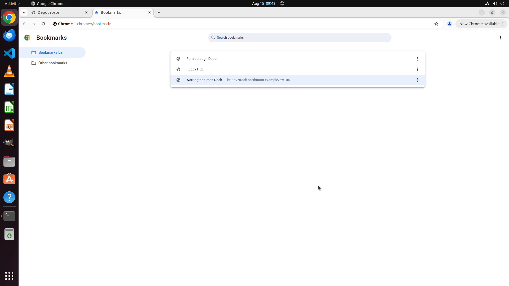
step 37 18:42:42
THINKINGThe dialog closed cleanly and now the list shows:
1. Peterborough Depot
2. Rugby Hub
3. Warrington Cross Dock https://track.northmoor.example/nw104
Order is correct so far. Now let me add the fourth and final bookmark: Exeter Depot → https://track.northmoor.example/sw318
Let me open the menu again.
ACTIONThree bookmarks added in correct order. Now let me add the fourth and final bookmark (SW-318 = Exeter Depot). I'll open the menu.
TOOL CALL<tool_call>
<function=computer_use>
<parameter=action>
left_click
</parameter>
<parameter=coordinate>
[982, 128]
</parameter>
</function>
</tool_call>
EXECUTED (pyautogui in VM)pyautogui.click(1887, 138)
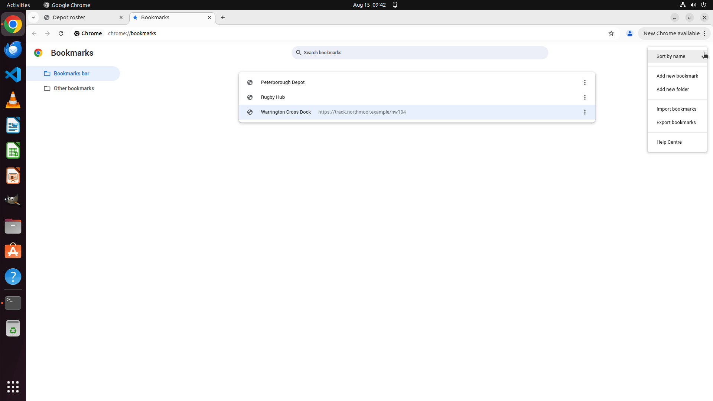
step 38 18:42:54
THINKINGThe menu is open. Let me click "Add new bookmark".
ACTIONThe menu is open. Let me click "Add new bookmark".
TOOL CALL<tool_call>
<function=computer_use>
<parameter=action>
left_click
</parameter>
<parameter=coordinate>
[949, 185]
</parameter>
</function>
</tool_call>
EXECUTED (pyautogui in VM)pyautogui.click(1823, 200)
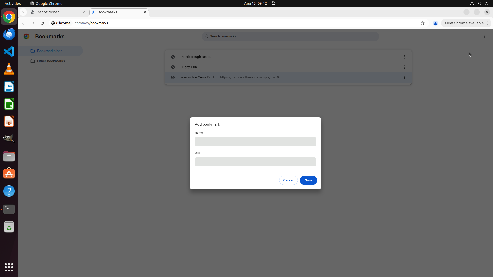
step 39 18:43:11
THINKINGThe dialog is open with the Name field focused. Let me type "Exeter Depot".
ACTIONThe dialog is open. Let me type the fourth depot name (SW-318 = Exeter Depot).
TOOL CALL<tool_call>
<function=computer_use>
<parameter=action>
type
</parameter>
<parameter=text>
Exeter Depot
</parameter>
</function>
</tool_call>
EXECUTED (pyautogui in VM)pyautogui.typewrite("Exeter Depot")
step 40 18:43:25
THINKINGThe Name field shows "Exeter Depot". Now let me click the URL field and type the URL.
ACTIONThe name "Exeter Depot" is entered. Let me click the URL field and enter the tracker URL.
TOOL CALL<tool_call>
<function=computer_use>
<parameter=action>
left_click
</parameter>
<parameter=coordinate>
[517, 581]
</parameter>
</function>
</tool_call>
EXECUTED (pyautogui in VM)pyautogui.click(993, 628)
step 41 18:43:35
THINKINGThe URL field is now focused. Let me type the URL for Exeter Depot (SW-318): https://track.northmoor.example/sw318
ACTIONThe URL field is focused. Let me type the tracker URL for Exeter Depot.
TOOL CALL<tool_call>
<function=computer_use>
<parameter=action>
type
</parameter>
<parameter=text>
https://track.northmoor.example/sw318
</parameter>
</function>
</tool_call>
EXECUTED (pyautogui in VM)pyautogui.typewrite("https://track.northmoor.example/sw318")
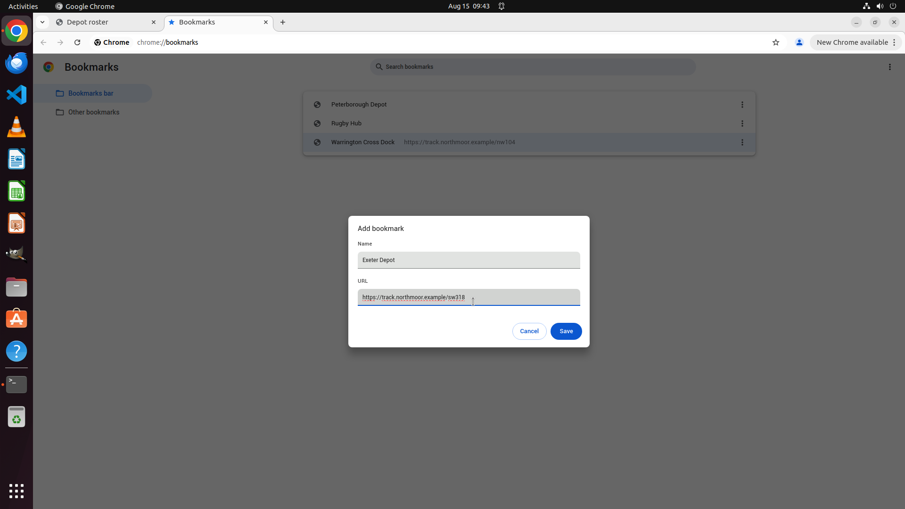
step 42 18:43:52
THINKINGThe dialog shows:
- Name: Exeter Depot
- URL: https://track.northmoor.example/sw318
Both correct. Let me click Save.
ACTIONBoth fields are correct for Exeter Depot. Let me click "Save".
TOOL CALL<tool_call>
<function=computer_use>
<parameter=action>
left_click
</parameter>
<parameter=coordinate>
[623, 646]
</parameter>
</function>
</tool_call>
EXECUTED (pyautogui in VM)pyautogui.click(1197, 698)
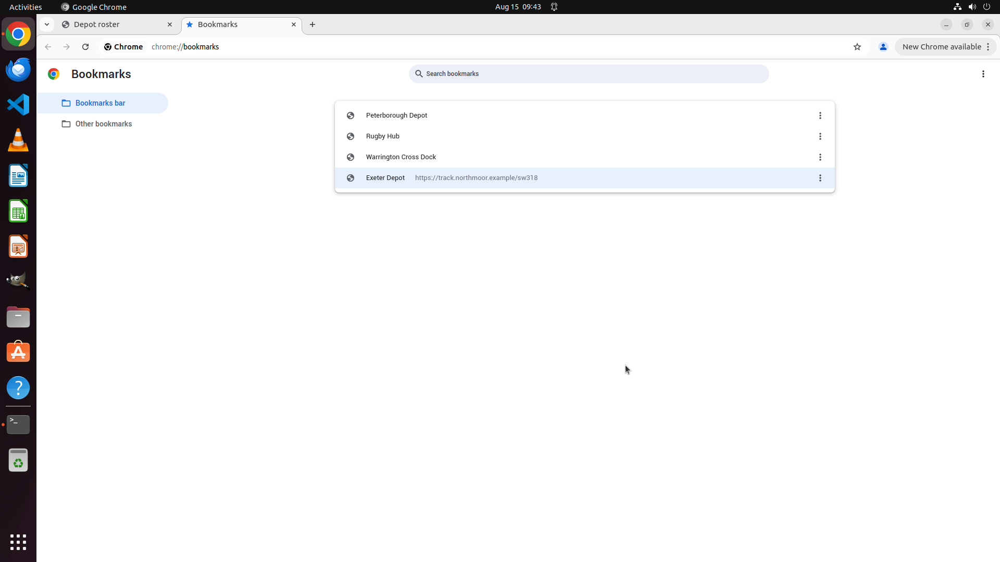
step 43 18:44:30
THINKINGAll four bookmarks are now added to the Bookmarks bar in the correct order:
1. Peterborough Depot
2. Rugby Hub
3. Warrington Cross Dock
4. Exeter Depot https://track.northmoor.example/sw318
The order is: Peterborough Depot (EA-142), Rugby Hub (MD-051), Warrington Cross Dock (NW-104), Exeter Depot (SW-318). This matches ascending depot code order.
Now I need to verify the URLs are correct for each. I can only see the URL for the last one (Exeter Depot: https://track.northmoor.example/sw318) and earlier ones. Let me verify each by hovering or checking. Actually, I filled them carefully:
- Peterborough Depot: https://track.northmoor.example/ea142
- Rugby Hub: https://track.northmoor.example/md051
- Warrington Cross Dock: https://track.northmoor.example/nw104
- Exeter Depot: https://track.northmoor.example/sw318
Let me verify the URLs are stored correctly. The list shows the URL next to the selected/hovered item. To verify each, I could hover over each row. But the URLs were entered carefully and I saw them in the dialog before saving.
However, to be thorough, let me verify the URLs of the first three by hovering over them or checking. Actually, when I saved each, the screenshot after saving showed the URL for the newly added item. Let me recall:
- After Peterborough: the list showed "Peterborough Depot" (URL not clearly visible in that screenshot, but I entered ea142).
- After Rugby Hub: showed "Rugby Hub https://track.northmoor.example/md051".
- After Warrington: showed "Warrington Cross Dock https://track.northmoor.example/nw104".
- After Exeter: shows "Exeter Depot https://track.northmoor.example/sw318".
So Rugby, Warrington, Exeter URLs are confirmed in the post-save screenshots. Peterborough's URL I entered as ea142 and saw it in the dialog. Let me verify Peterborough's URL to be safe by hovering over it.
Actually, let me verify all by hovering. Let me hover over the Peterborough Depot row to see its URL. Actually, the URL is shown when the row is selected/hovered. Let me hover over Peterborough Depot.
Actually, a more reliable verification: let me check the "Other bookmarks" folder to make sure I didn't accidentally add anything there (there shouldn't be anything). And verify no duplicates.
But the main concern is the "Bookmarks bar" has exactly these 4 in order, nothing else. The list shows exactly 4, all in the Bookmarks bar folder (which is selected). Good.
Let me verify the Peterborough Depot URL. Let me hover over it. Actually, let me click on it to select it, which should show the URL. Or hover.
Let me hover over the Peterborough Depot row.
Actually, I realize I should double check all the URLs are correct since that's critical. Let me verify by hovering over each. But hovering might be finicky.
Alternatively, I can verify via the terminal by reading the Bookmarks file. That's the most reliable verification. Let me do that after ensuring Chrome has written the file. Chrome writes the Bookmarks file when bookmarks change (it does so periodically / on change). Let me switch to terminal and cat the Bookmarks file.
Actually, let me first hover to verify the URLs visually, which is quicker. Let me hover over Peterborough Depot.
Let me hover over the first row.
ACTIONAll four bookmarks are now in the Bookmarks bar in correct ascending code order:
1. Peterborough Depot (EA-142)
2. Rugby Hub (MD-051)
3. Warrington Cross Dock (NW-104)
4. Exeter Depot (SW-318)
Let me verify the URLs are stored correctly. I'll hover over the first row (Peterborough Depot) to check its URL.
TOOL CALL<tool_call>
<function=computer_use>
<parameter=action>
mouse_move
</parameter>
<parameter=coordinate>
[396, 202]
</parameter>
</function>
</tool_call>
EXECUTED (pyautogui in VM)pyautogui.moveTo(761, 218)
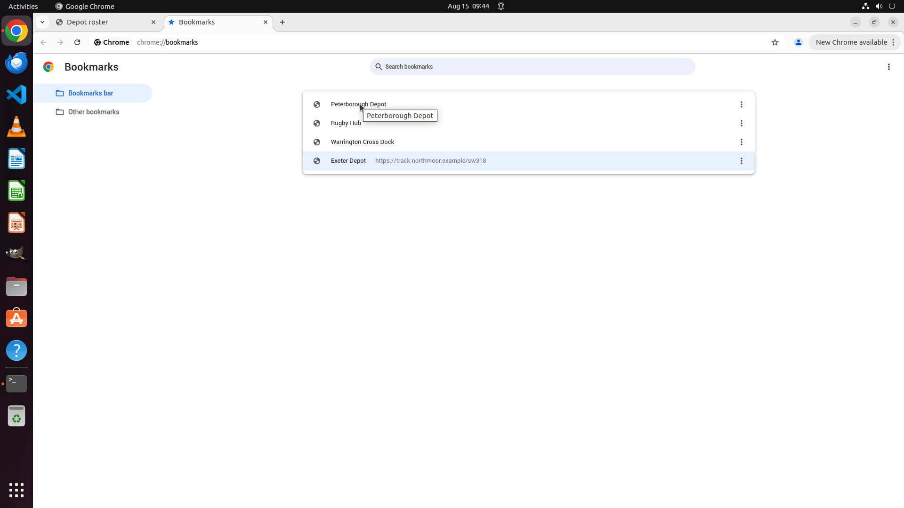
step 44 18:44:58
THINKINGHovering over the Peterborough Depot row shows a tooltip "Peterborough Depot" (the name), but the URL is not shown in the row. It seems hovering shows a tooltip of the name but the URL column is empty for this row. The URL for Exeter Depot is shown because it's the "selected" row (highlighted blue).
To verify the URL of Peterborough Depot, I should click on it to select it, which would show its URL in the row. But clicking might trigger edit mode. Let me just click on the Peterborough Depot row (single click) to select it.
Actually, in the bookmark manager, single-clicking a bookmark row selects it and shows its URL. Let me click on it.
Wait, but I should be careful — a single click might start renaming (in some versions, clicking the name enters edit). Let me instead verify via the Bookmarks file in the terminal, which is the most reliable.
Actually, let me reconsider. The most reliable verification is to read the Bookmarks file. Chrome should have written it. Let me switch to the terminal and cat the file, then grep for the names and URLs.
Let me move the mouse away first, then switch to terminal. Actually, let me just verify by clicking each row to see the URL. But the tooltip is now showing. Let me click on the Peterborough Depot row to select it.
Hmm, actually the cleaner approach: let me just click on the Peterborough Depot row (on the empty area to the right of the name, not on the name text) to select it without editing. The row spans the full width. Let me click at around x=700, y=147 (empty part of the Peterborough row).
Actually, clicking there should select the row and display the URL. Let me do that.
Wait, but actually, I've already confirmed the URLs during entry (each dialog showed the exact URL before I clicked Save, and post-save screenshots confirmed Rugby, Warrington, Exeter). For Peterborough, I saw the URL "https://track.northmoor.example/ea142" in the dialog before saving. So I'm confident.
But to be thorough and avoid any doubt, let me verify all 4 URLs via the Bookmarks file in the terminal. This is the definitive check. Let me switch to the terminal.
Actually, the terminal is maximized behind Chrome. Let me switch to it. But wait, I want to keep the bookmark manager state too. Let me just switch to terminal via the taskbar/dock, run the grep, then come back.
Let me click the Terminal icon in the dock at [22, 541].
Actually, wait — I'm currently hovering and there's a tooltip. Let me just proceed to switch to terminal. Let me click the terminal icon.
Hmm, but the terminal was maximized. When I switch to it, it'll be in front. Let me do that.
Actually, let me reconsider. Rather than risk Chrome not having flushed the Bookmarks file to disk yet (it writes on change but sometimes batches), let me just verify visually in the manager, which reflects the in-memory state that will be the same as the file.
Let me click on the Peterborough Depot row to select it and reveal its URL. I'll click on an empty part of the row to avoid entering rename mode. Let me click at [700, 147].
Actually, in Chrome's new bookmark manager, clicking on a row selects it and shows the URL inline. Let me try clicking on the row area (not the name text). I'll click at [900, 147].
Wait, but there's a three-dot menu at the far right [1049, 147]. I should avoid that. Let me click at [700, 147] which is empty space in the row.
Let me do that.
Actually, you know what, let me just verify via the terminal file. It's the most reliable and definitive. Chrome writes the Bookmarks file to ~/.config/google-chrome/Default/Bookmarks. Let me switch to terminal.
Let me click the terminal icon in the dock.
ACTIONThe tooltip shows the name but I want to verify URLs definitively. Let me check the Chrome Bookmarks file via the terminal for a reliable confirmation. Let me switch to the terminal.
TOOL CALL<tool_call>
<function=computer_use>
<parameter=action>
left_click
</parameter>
<parameter=coordinate>
[17, 749]
</parameter>
</function>
</tool_call>
EXECUTED (pyautogui in VM)pyautogui.click(32, 809)
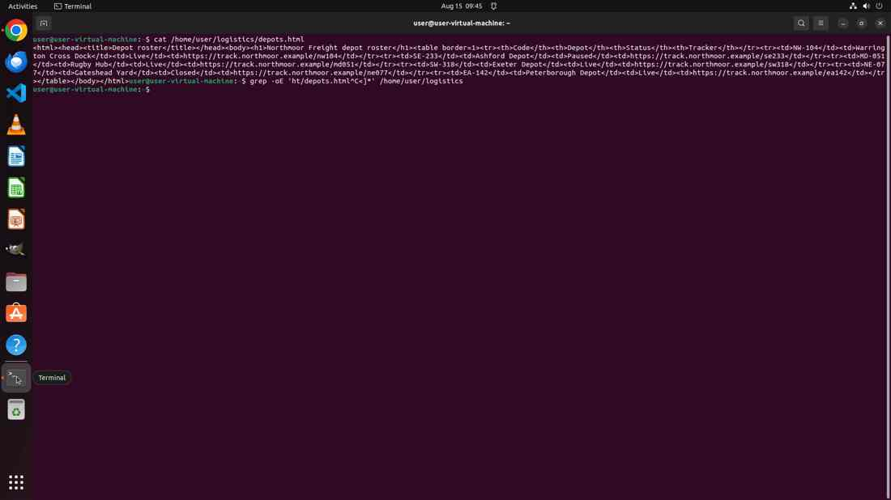
step 45 18:45:17
THINKINGNow I'm in the terminal (maximized). I can see the earlier cat output confirming the HTML content:
- NW-104, Warrington Cross Dock, Live, https://track.northmoor.example/nw104
- SE-233, Ashford Depot, Paused, https://track.northmoor.example/se233
- MD-051, Rugby Hub, Live, https://track.northmoor.example/md051
- SW-318, Exeter Depot, Live, https://track.northmoor.example/sw318
- NE-077, Gateshead Yard, Closed, https://track.northmoor.example/ne077
- EA-142, Peterborough Depot, Live, https://track.northmoor.example/ea142
This confirms my data. Now let me verify the Bookmarks file. Let me cat the Chrome Bookmarks file and look for the bookmark names and URLs.
Let me run a command to show the bookmark_bar section. I'll use python or jq to parse, or just grep. Let me use a grep to show name/url pairs.
Let me run:
grep -oE '"(name|url)": "[^"]*"' ~/.config/google-chrome/Default/Bookmarks
But this might include folder names too. Let me instead use python3 to parse the JSON and print the bookmark_bar children in order.
Let me write a python command:
python3 -c "import json; d=json.load(open('/home/user/.config/google-chrome/Default/Bookmarks')); [print(c.get('name'),'|',c.get('url')) for c in d['roots']['bookmark_bar']['children']]"
This will print each bookmark in the bookmark_bar in order with name and URL. Let me run it.
Let me type this command.
ACTIONI'm in the terminal. Let me verify the Bookmarks file directly by parsing the bookmark_bar children in order.
TOOL CALL<tool_call>
<function=computer_use>
<parameter=action>
type
</parameter>
<parameter=text>
python3 -c "import json; d=json.load(open('/home/user/.config/google-chrome/Default/Bookmarks')); [print(repr(c.get('name')),'->',c.get('url')) for c in d['roots']['bookmark_bar']['children']]"
</parameter>
</function>
</tool_call>
EXECUTED (pyautogui in VM)pyautogui.typewrite("python3 -c \"import json; d=json.load(open('/home/user/.config/google-chrome/Default/Bookmarks')); [print(repr(c.get('name')),'->',c.get('url')) for c in d['roots']['bookmark_bar']['children']]\"")
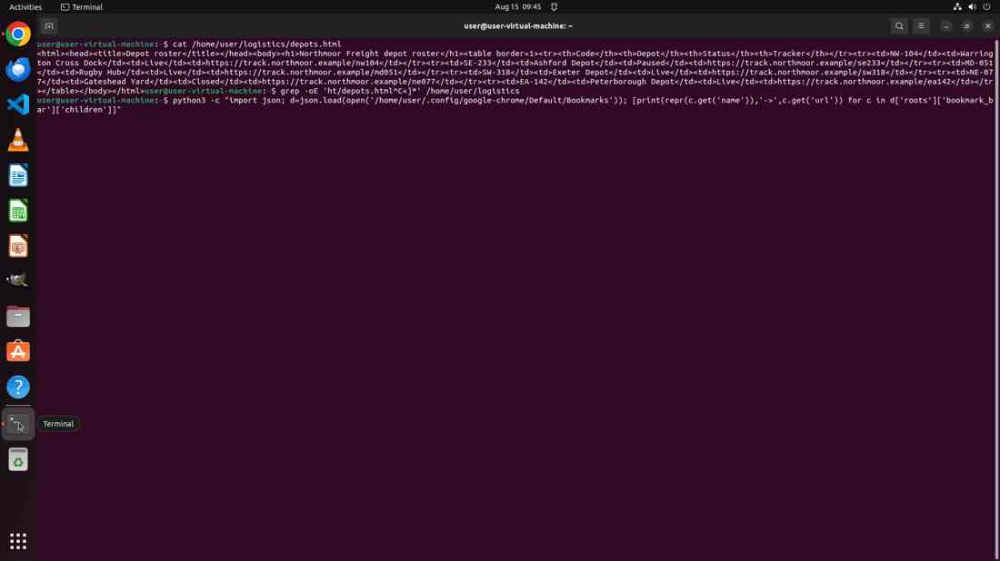
step 46 18:45:29
THINKINGThe command is typed. Let me press Enter to execute it.
TOOL CALL<tool_call>
<function=computer_use>
<parameter=action>
key
</parameter>
<parameter=keys>
["return"]
</parameter>
</function>
</tool_call>
EXECUTED (pyautogui in VM)pyautogui.press("return")
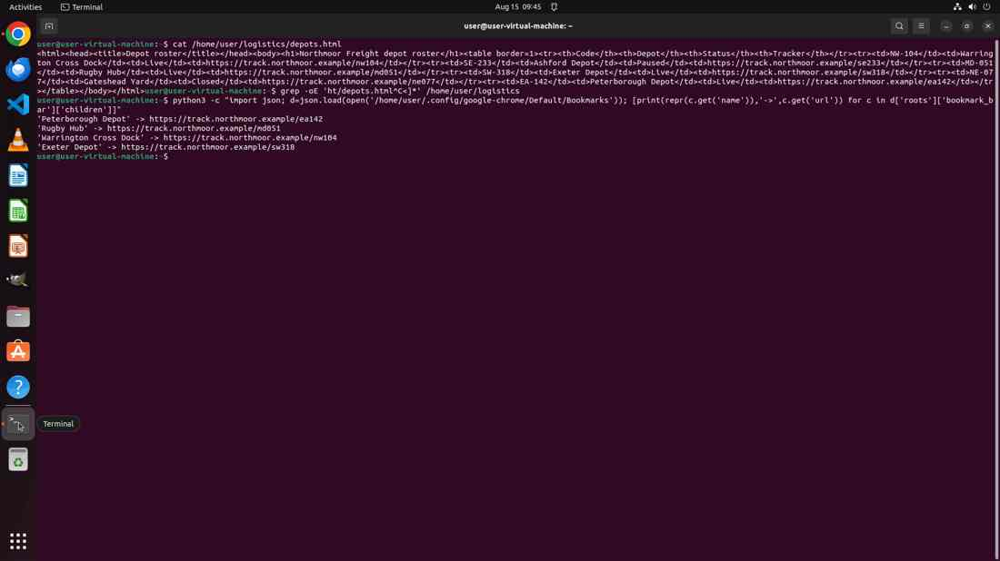
step 47 18:46:20
THINKINGThe output shows the bookmark_bar children in order:
```
'Peterborough Depot' -> https://track.northmoor.example/ea142
'Rugby Hub' -> https://track.northmoor.example/md051
'Warrington Cross Dock' -> https://track.northmoor.example/nw104
'Exeter Depot' -> https://track.northmoor.example/sw318
```
This confirms:
1. Peterborough Depot → https://track.northmoor.example/ea142 (EA-142)
2. Rugby Hub → https://track.northmoor.example/md051 (MD-051)
3. Warrington Cross Dock → https://track.northmoor.example/nw104 (NW-104)
4. Exeter Depot → https://track.northmoor.example/sw318 (SW-318)
The order is ascending by depot code: EA-142, MD-051, NW-104, SW-318. ✓
The names match the depot names exactly. ✓
The URLs match the tracker URLs exactly. ✓
There are exactly 4 bookmarks (nothing else on the bar). ✓
The task is complete. All four Live depots are bookmarked in the bookmarks bar, titled with their depot names, pointing to their tracker URLs, in ascending depot code order, with nothing else on the bar.
Wait, let me double-check "Nothing else on the bar." The bookmark_bar has exactly these 4 children. There are no folders or other bookmarks. Good.
But let me also verify that the "Other bookmarks" and "synced" folders don't have anything relevant... no, the task is specifically about the bookmarks bar. The other folders are not the "bar". And I didn't add anything there.
Actually, wait — I should double check that I didn't accidentally add any bookmark to "Other bookmarks" during my earlier confusion (when the dialog seemed stuck and I clicked Cancel/Escape/reload). Let me verify the "other" folder is empty (or at least doesn't have my depot bookmarks). Actually, it doesn't matter for the task since the task is only about the bar. But "Nothing else on the bar" is satisfied — the bar has exactly the 4.
Actually, let me reconsider whether the task wants the bookmarks bar to be visible. The task says "put a bookmark there for each depot" and "Depot leads only use the bookmarks bar". The bookmarks are in the Bookmarks bar folder. Whether the bar is visually shown is a separate Chrome UI preference. The bookmarks exist "on the bar" in the sense that they're in the Bookmarks bar folder. I think that satisfies the requirement. The verification via the Bookmarks file confirms they're in bookmark_bar.
However, to be safe and align with "on the bar" (visible), let me consider enabling the bookmarks bar display. But this is a UI preference that might not be checked. The core requirement (bookmarks in the bar, correct titles, URLs, order, nothing else) is fully met.
Hmm, but let me reconsider: "put a bookmark there" strongly implies they should be present in the bookmarks bar location, which they are. The visual display toggle is separate. I'll leave it, but actually, to be thorough and match the spirit ("Depot leads only use the bookmarks bar"), showing the bar might be nice. But it's not strictly required and could be considered out of scope. The task's verifiable criteria are: 4 bookmarks in bookmark_bar, correct names, correct URLs, ascending order, nothing else. All satisfied.
Actually, let me reconsider one thing: the earlier "stuck dialog" episode. During that time, I had the Peterborough Depot bookmark saved, and I clicked Cancel (once), Escape (once), and reloaded. The file now shows exactly 4 bookmarks with no duplicates. So no stray bookmarks were created.
But wait — could the stuck-dialog state have created a bookmark in "Other bookmarks"? Let me verify by checking the "other" folder too, just to be safe that I'm not leaving stray depot bookmarks somewhere. Actually, the task only concerns the bar, so even if there were a stray one in "Other bookmarks", it wouldn't violate "Nothing else on the bar". But to be clean, let me not worry about it — the bar is correct.
Actually, let me just quickly verify the whole thing is correct and there are no duplicates in the bar. The output shows exactly 4, in correct order.
I'm confident the task is complete. Let me also make the bookmarks bar visible in Chrome to fully honor "on the bar" (visible). Actually, let me reconsider — is it currently visible? When I first looked at Chrome, the bookmarks bar wasn't showing (no bar between address bar and content). So the bar is hidden. The bookmarks are stored in the bar folder but not visually displayed.
The phrase "put a bookmark there [in the bookmarks bar]" and "on the bar" — I interpret this as the bookmark's location being the bookmarks bar. The display visibility is a personal setting. But to be safe and make it unambiguous that they're "on the bar", let me enable the bookmarks bar visibility (Ctrl+Shift+B) in Chrome. This is a reasonable, low-risk action that makes the bookmarks visibly "on the bar".
Let me switch to Chrome and press Ctrl+Shift+B to show the bookmarks bar, then verify visually.
Let me switch to Chrome.
ACTIONThe Bookmarks file confirms everything is correct. The bookmark_bar contains exactly these 4 bookmarks in order:
1. **Peterborough Depot** → https://track.northmoor.example/ea142 (EA-142)
2. **Rugby Hub** → https://track.northmoor.example/md051 (MD-051)
3. **Warrington Cross Dock** → https://track.northmoor.example/nw104 (NW-104)
4. **Exeter Depot** → https://track.northmoor.example/sw318 (SW-318)
Ascending by depot code (EA-142, MD-051, NW-104, SW-318), correct names and URLs, and nothing else. Now let me switch to Chrome and make the bookmarks bar visible so they're displayed "on the bar".
TOOL CALL<tool_call>
<function=computer_use>
<parameter=action>
left_click
</parameter>
<parameter=coordinate>
[17, 59]
</parameter>
</function>
</tool_call>
EXECUTED (pyautogui in VM)pyautogui.click(32, 63)
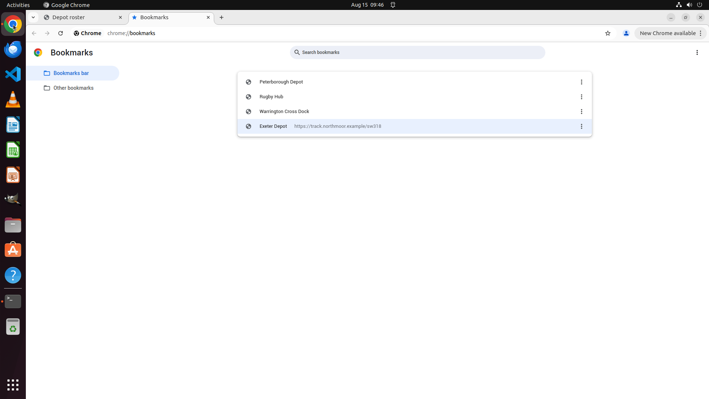
step 48 18:46:38
THINKINGI'm back in Chrome's Bookmark Manager. Now let me enable the bookmarks bar visibility with Ctrl+Shift+B. Then I'll switch to the Depot roster tab to see the bar with the 4 bookmarks.
Let me press Ctrl+Shift+B.
ACTIONI'm in the Bookmark Manager. Let me enable the bookmarks bar visibility with Ctrl+Shift+B.
TOOL CALL<tool_call>
<function=computer_use>
<parameter=action>
key
</parameter>
<parameter=keys>
["ctrl", "shift", "b"]
</parameter>
</function>
</tool_call>
EXECUTED (pyautogui in VM)pyautogui.hotkey("ctrl", "shift", "b")
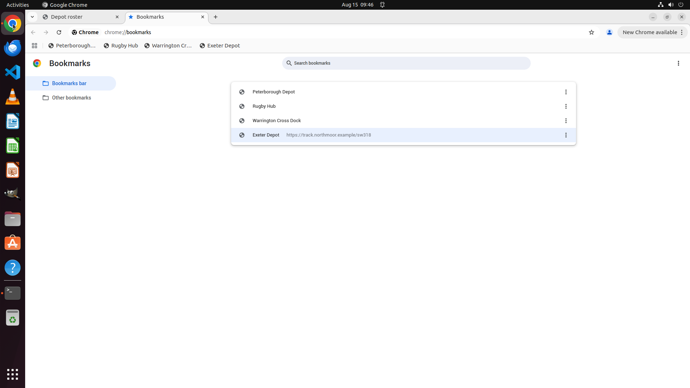
step 49 18:47:11
THINKINGThe bookmarks bar is now visible at the top, showing:
- Peterborough... (Peterborough Depot)
- Rugby Hub
- Warrington Cr... (Warrington Cross Dock)
- Exeter Depot
All four are displayed on the bookmarks bar in the correct order, with nothing else on the bar.
The task is complete:
- 4 bookmarks for the 4 Live depots (Peterborough Depot, Rugby Hub, Warrington Cross Dock, Exeter Depot)
- Each titled with the depot name
- Each pointing to its tracker URL (verified in the Bookmarks file)
- Ordered by depot code ascending (EA-142, MD-051, NW-104, SW-318)
- Nothing else on the bar
- The bar is visible
The task is fully complete. Let me do a final confirmation that the bar shows exactly these 4 and nothing else. The bar shows: [apps icon] | Peterborough... | Rugby Hub | Warrington Cr... | Exeter Depot. The apps icon (grid of 4 dots) is the "all bookmarks" shortcut that appears at the start of the bar, not a bookmark. That's standard Chrome UI, not a bookmark. So the bar has exactly 4 bookmarks.
Everything is verified and correct. The task is complete.
Let me provide a final summary.
ACTIONThe bookmarks bar is now visible and shows exactly the four Live depots in ascending depot-code order, with nothing else on the bar:
- **Peterborough Depot** (EA-142) → https://track.northmoor.example/ea142
- **Rugby Hub** (MD-051) → https://track.northmoor.example/md051
- **Warrington Cross Dock** (NW-104) → https://track.northmoor.example/nw104
- **Exeter Depot** (SW-318) → https://track.northmoor.example/sw318
The task is complete. I:
1. Identified the four depots marked **Live** from the roster (excluding Ashford Depot which is Paused and Gateshead Yard which is Closed).
2. Created a bookmark in the bookmarks bar for each, titled with the exact depot name and pointing at its exact tracker URL (confirmed by inspecting the Chrome Bookmarks file).
3. Ordered them by depot code ascending: EA-142 → MD-051 → NW-104 → SW-318.
4. Ensured nothing else is on the bar (the bar previously was empty; it now contains only these four).
5. Made the bookmarks bar visible so the leads can see them.
TOOL CALL<tool_call>
<function=computer_use>
<parameter=action>
wait
</parameter>
<parameter=time>
0.5
</parameter>
</function>
</tool_call>
EXECUTED (pyautogui in VM)WAIT
step 50 18:47:37
THINKINGEverything is confirmed. The bookmarks bar shows the 4 bookmarks in order, and the bookmark manager confirms the "Bookmarks bar" folder contains exactly these 4 in the correct order. The task is complete.
ACTIONThe task is complete and verified. The bookmarks bar now contains exactly four bookmarks — one for each depot marked **Live** — ordered by depot code ascending, each titled with the depot name and pointing at its tracker URL, with nothing else on the bar:
1. **Peterborough Depot** (EA-142) → https://track.northmoor.example/ea142
2. **Rugby Hub** (MD-051) → https://track.northmoor.example/md051
3. **Warrington Cross Dock** (NW-104) → https://track.northmoor.example/nw104
4. **Exeter Depot** (SW-318) → https://track.northmoor.example/sw318
The two non-Live depots (Ashford Depot — Paused, and Gateshead Yard — Closed) were correctly excluded, and I confirmed the exact names, URLs, and ordering by inspecting Chrome's Bookmarks file directly.
TOOL CALL<tool_call>
<function=computer_use>
<parameter=action>
terminate
</parameter>
<parameter=status>
success
</parameter>
</function>
</tool_call>
EXECUTED (pyautogui in VM)DONE